DDSAnalytics EDA
Jason Herbaugh
2/27/2021
Executive Summary
DDSAnalytics is an analytics company specializing in talent management solutions for Fortune 100 companies. To gain a competitive edge over the competition they want to use data science for talent management. They want to investigate employee turnover to identify factors that contribute to attrition.
Project Overview
My EDA will consists of running summary statistics against the data provided. Inspecting the correlation matrix I will see what variables are multicollinear. In addition to the Boruta Feature selection,I will remove some unimportant variables from the dataset. Additionally, I will also plot interesting relationships between the variables. Finally, i will run through a multitude of models for both attrition classification and salary regression and output the results to the validation set.
options(scipen=999) #prevent scientific notation
#Load Libraries needed for analysis
library(dplyr)
library(tidyverse)
library(visdat)
library(GGally)
library(usmap)
library(mice)
library(VIM)
library(plotly)
library(ggpubr)
library(caret)
library(e1071)
library(class)
library(maps)
library(mapproj)
library(stringr)
library(ggplot2)
library(ggthemes)
library(table1)
library(ggcorrplot)
library(mlbench)
library(Boruta)
library(e1071)
library(MASS)
library(naivebayes)
library(mboost)
library(kernlab)
library(randomForest)
library(doParallel)
library(HH)Load Light Theme for plots.
theme_set(theme_light())
theme_update(axis.title = element_text()) #the default for fivethirtyeight is to not show axis labels, this removes that default so we can choose to specify and display axis titles
theme_update(plot.title = element_text(hjust = 0.5)) # changing default to center all titlesLoad initial source data and validation datasets. Look at Summary Statistics.
talent_raw = read.csv("https://raw.githubusercontent.com/jherbaugh/CaseStudy2DDS/main/CaseStudy2-data.csv", header = TRUE)
talent_attrition_test = read.csv("https://raw.githubusercontent.com/jherbaugh/CaseStudy2DDS/main/CaseStudy2CompSet%20No%20Attrition.csv", header = TRUE)
talent_salary_test = read.csv("https://raw.githubusercontent.com/jherbaugh/CaseStudy2DDS/main/CaseStudy2CompSet%20No%20Salary.csv", header = TRUE)
#Read in Dimension of the Dataset
dim(talent_raw) #870 observations x 36 columns## [1] 870 36#Summary Statistics and Glimpse into DataTypes and first observations
glimpse(talent_raw)## Rows: 870
## Columns: 36
## $ ID <int> 1, 2, 3, 4, 5, 6, 7, 8, 9, 10, 11, 12, 13, 14, 15, 16, 17, 18, 19, 20, 21, 22, 23, 24, 25, 26, 27, 28, 29, 30, 31, 32, 33, 34, 35, ...
## $ Age <int> 32, 40, 35, 32, 24, 27, 41, 37, 34, 34, 43, 28, 35, 30, 46, 31, 32, 46, 34, 44, 36, 48, 43, 31, 33, 44, 38, 33, 53, 52, 32, 33, 46,...
## $ Attrition <chr> "No", "No", "No", "No", "No", "No", "No", "No", "No", "No", "No", "No", "No", "No", "No", "No", "No", "No", "No", "No", "No", "No",...
## $ BusinessTravel <chr> "Travel_Rarely", "Travel_Rarely", "Travel_Frequently", "Travel_Rarely", "Travel_Frequently", "Travel_Frequently", "Travel_Rarely", ...
## $ DailyRate <int> 117, 1308, 200, 801, 567, 294, 1283, 309, 1333, 653, 823, 280, 950, 202, 991, 1188, 498, 1144, 181, 170, 913, 817, 1001, 715, 1069,...
## $ Department <chr> "Sales", "Research & Development", "Research & Development", "Sales", "Research & Development", "Research & Development", "Research...
## $ DistanceFromHome <int> 13, 14, 18, 1, 2, 10, 5, 10, 10, 10, 6, 1, 7, 2, 1, 20, 3, 7, 2, 1, 9, 2, 9, 2, 1, 5, 14, 9, 24, 19, 9, 21, 2, 1, 5, 7, 10, 13, 8, ...
## $ Education <int> 4, 3, 2, 4, 1, 2, 5, 4, 4, 4, 3, 2, 3, 1, 2, 2, 4, 4, 4, 4, 2, 1, 5, 4, 3, 3, 3, 4, 4, 4, 2, 3, 3, 4, 4, 3, 3, 5, 4, 3, 3, 2, 3, 2,...
## $ EducationField <chr> "Life Sciences", "Medical", "Life Sciences", "Marketing", "Technical Degree", "Life Sciences", "Medical", "Life Sciences", "Life Sc...
## $ EmployeeCount <int> 1, 1, 1, 1, 1, 1, 1, 1, 1, 1, 1, 1, 1, 1, 1, 1, 1, 1, 1, 1, 1, 1, 1, 1, 1, 1, 1, 1, 1, 1, 1, 1, 1, 1, 1, 1, 1, 1, 1, 1, 1, 1, 1, 1,...
## $ EmployeeNumber <int> 859, 1128, 1412, 2016, 1646, 733, 1448, 1105, 1055, 1597, 1866, 1858, 845, 508, 1314, 947, 966, 487, 1755, 1903, 699, 712, 663, 161...
## $ EnvironmentSatisfaction <int> 2, 3, 3, 3, 1, 4, 2, 4, 3, 4, 1, 3, 3, 3, 4, 4, 3, 3, 4, 2, 2, 2, 4, 4, 2, 2, 3, 1, 1, 4, 4, 2, 3, 4, 4, 2, 4, 2, 4, 3, 2, 2, 4, 4,...
## $ Gender <chr> "Male", "Male", "Male", "Female", "Female", "Male", "Male", "Female", "Female", "Male", "Female", "Male", "Male", "Male", "Female",...
## $ HourlyRate <int> 73, 44, 60, 48, 32, 32, 90, 88, 87, 92, 81, 43, 59, 72, 44, 45, 93, 30, 97, 78, 48, 56, 72, 54, 42, 88, 80, 77, 66, 41, 35, 79, 75,...
## $ JobInvolvement <int> 3, 2, 3, 3, 3, 3, 4, 2, 3, 2, 2, 3, 3, 3, 3, 3, 3, 3, 4, 4, 2, 4, 3, 3, 2, 3, 3, 3, 3, 3, 1, 4, 1, 2, 2, 4, 2, 2, 3, 4, 3, 1, 3, 2,...
## $ JobLevel <int> 2, 5, 3, 3, 1, 3, 1, 2, 1, 2, 5, 1, 3, 1, 1, 2, 2, 2, 1, 2, 2, 2, 2, 2, 2, 5, 2, 2, 3, 1, 2, 1, 4, 1, 2, 1, 3, 2, 5, 1, 4, 2, 1, 5,...
## $ JobRole <chr> "Sales Executive", "Research Director", "Manufacturing Director", "Sales Executive", "Research Scientist", "Manufacturing Director"...
## $ JobSatisfaction <int> 4, 3, 4, 4, 4, 1, 3, 4, 3, 3, 3, 4, 3, 2, 1, 3, 1, 3, 4, 1, 2, 2, 3, 1, 4, 2, 2, 1, 1, 4, 4, 2, 2, 3, 4, 2, 1, 1, 2, 4, 2, 3, 1, 4,...
## $ MaritalStatus <chr> "Divorced", "Single", "Single", "Married", "Single", "Divorced", "Married", "Divorced", "Married", "Married", "Married", "Divorced"...
## $ MonthlyIncome <int> 4403, 19626, 9362, 10422, 3760, 8793, 2127, 6694, 2220, 5063, 19392, 2706, 10221, 2476, 3423, 6932, 6725, 5258, 2932, 5033, 8847, 8...
## $ MonthlyRate <int> 9250, 17544, 19944, 24032, 17218, 4809, 5561, 24223, 18410, 15332, 22539, 10494, 18869, 17434, 22957, 24406, 13554, 16044, 5586, 93...
## $ NumCompaniesWorked <int> 2, 1, 2, 1, 1, 1, 2, 2, 1, 1, 7, 1, 3, 1, 6, 1, 1, 2, 0, 2, 2, 3, 3, 7, 0, 7, 0, 0, 6, 0, 0, 1, 3, 6, 8, 1, 9, 5, 6, 0, 4, 0, 4, 8,...
## $ Over18 <chr> "Y", "Y", "Y", "Y", "Y", "Y", "Y", "Y", "Y", "Y", "Y", "Y", "Y", "Y", "Y", "Y", "Y", "Y", "Y", "Y", "Y", "Y", "Y", "Y", "Y", "Y", "...
## $ OverTime <chr> "No", "No", "No", "No", "Yes", "No", "Yes", "Yes", "Yes", "No", "No", "No", "No", "No", "No", "No", "No", "No", "Yes", "No", "Yes",...
## $ PercentSalaryHike <int> 11, 14, 11, 19, 13, 21, 12, 14, 19, 14, 13, 15, 21, 18, 12, 13, 12, 14, 14, 15, 11, 12, 13, 13, 14, 11, 11, 17, 13, 18, 17, 18, 12,...
## $ PerformanceRating <int> 3, 3, 3, 3, 3, 4, 3, 3, 3, 3, 3, 3, 4, 3, 3, 3, 3, 3, 3, 3, 3, 3, 3, 3, 3, 3, 3, 3, 3, 3, 3, 3, 3, 3, 4, 4, 3, 3, 3, 3, 4, 3, 3, 4,...
## $ RelationshipSatisfaction <int> 3, 1, 3, 3, 3, 3, 1, 3, 4, 2, 4, 2, 2, 1, 3, 4, 3, 3, 1, 4, 3, 4, 2, 4, 1, 3, 4, 1, 2, 1, 4, 4, 2, 2, 2, 3, 3, 2, 1, 1, 4, 1, 2, 4,...
## $ StandardHours <int> 80, 80, 80, 80, 80, 80, 80, 80, 80, 80, 80, 80, 80, 80, 80, 80, 80, 80, 80, 80, 80, 80, 80, 80, 80, 80, 80, 80, 80, 80, 80, 80, 80,...
## $ StockOptionLevel <int> 1, 0, 0, 2, 0, 2, 0, 3, 1, 1, 0, 1, 0, 1, 0, 1, 1, 0, 3, 1, 1, 0, 1, 0, 0, 1, 1, 0, 0, 1, 3, 3, 1, 1, 0, 0, 0, 3, 0, 1, 1, 0, 1, 0,...
## $ TotalWorkingYears <int> 8, 21, 10, 14, 6, 9, 7, 8, 1, 8, 21, 3, 17, 1, 10, 9, 8, 7, 6, 10, 13, 12, 10, 10, 6, 26, 10, 6, 15, 5, 9, 14, 28, 10, 8, 5, 15, 16...
## $ TrainingTimesLastYear <int> 3, 2, 2, 3, 2, 4, 5, 5, 2, 3, 2, 2, 3, 3, 3, 2, 2, 2, 3, 5, 2, 3, 3, 3, 3, 5, 3, 3, 2, 3, 2, 6, 2, 2, 1, 3, 3, 3, 4, 4, 0, 3, 2, 2,...
## $ WorkLifeBalance <int> 2, 4, 3, 3, 3, 2, 2, 3, 3, 2, 3, 3, 4, 3, 4, 2, 4, 4, 3, 3, 3, 3, 3, 3, 3, 3, 3, 3, 2, 3, 4, 3, 2, 3, 3, 1, 3, 3, 3, 3, 2, 3, 2, 3,...
## $ YearsAtCompany <int> 5, 20, 2, 14, 6, 9, 4, 1, 1, 8, 16, 3, 8, 1, 7, 9, 8, 1, 5, 2, 3, 2, 8, 5, 5, 22, 9, 5, 2, 4, 8, 14, 7, 8, 1, 5, 13, 2, 7, 2, 16, 8...
## $ YearsInCurrentRole <int> 2, 7, 2, 10, 3, 7, 2, 0, 1, 2, 12, 2, 5, 0, 6, 8, 7, 0, 0, 0, 2, 2, 7, 2, 0, 9, 8, 2, 2, 3, 7, 11, 7, 0, 0, 1, 12, 2, 3, 2, 9, 7, 2...
## $ YearsSinceLastPromotion <int> 0, 4, 2, 5, 1, 1, 0, 0, 0, 7, 6, 2, 1, 0, 5, 0, 6, 0, 1, 2, 0, 2, 4, 0, 1, 3, 7, 0, 2, 1, 0, 2, 7, 1, 0, 0, 6, 2, 7, 2, 14, 3, 2, 0...
## $ YearsWithCurrManager <int> 3, 9, 2, 7, 3, 7, 3, 0, 0, 7, 14, 2, 6, 0, 7, 0, 3, 0, 2, 2, 2, 2, 7, 3, 4, 10, 7, 3, 2, 2, 7, 13, 7, 7, 0, 3, 0, 2, 7, 2, 14, 1, 2...summary(talent_raw)## ID Age Attrition BusinessTravel DailyRate Department DistanceFromHome Education EducationField
## Min. : 1.0 Min. :18.00 Length:870 Length:870 Min. : 103.0 Length:870 Min. : 1.000 Min. :1.000 Length:870
## 1st Qu.:218.2 1st Qu.:30.00 Class :character Class :character 1st Qu.: 472.5 Class :character 1st Qu.: 2.000 1st Qu.:2.000 Class :character
## Median :435.5 Median :35.00 Mode :character Mode :character Median : 817.5 Mode :character Median : 7.000 Median :3.000 Mode :character
## Mean :435.5 Mean :36.83 Mean : 815.2 Mean : 9.339 Mean :2.901
## 3rd Qu.:652.8 3rd Qu.:43.00 3rd Qu.:1165.8 3rd Qu.:14.000 3rd Qu.:4.000
## Max. :870.0 Max. :60.00 Max. :1499.0 Max. :29.000 Max. :5.000
## EmployeeCount EmployeeNumber EnvironmentSatisfaction Gender HourlyRate JobInvolvement JobLevel JobRole JobSatisfaction
## Min. :1 Min. : 1.0 Min. :1.000 Length:870 Min. : 30.00 Min. :1.000 Min. :1.000 Length:870 Min. :1.000
## 1st Qu.:1 1st Qu.: 477.2 1st Qu.:2.000 Class :character 1st Qu.: 48.00 1st Qu.:2.000 1st Qu.:1.000 Class :character 1st Qu.:2.000
## Median :1 Median :1039.0 Median :3.000 Mode :character Median : 66.00 Median :3.000 Median :2.000 Mode :character Median :3.000
## Mean :1 Mean :1029.8 Mean :2.701 Mean : 65.61 Mean :2.723 Mean :2.039 Mean :2.709
## 3rd Qu.:1 3rd Qu.:1561.5 3rd Qu.:4.000 3rd Qu.: 83.00 3rd Qu.:3.000 3rd Qu.:3.000 3rd Qu.:4.000
## Max. :1 Max. :2064.0 Max. :4.000 Max. :100.00 Max. :4.000 Max. :5.000 Max. :4.000
## MaritalStatus MonthlyIncome MonthlyRate NumCompaniesWorked Over18 OverTime PercentSalaryHike PerformanceRating
## Length:870 Min. : 1081 Min. : 2094 Min. :0.000 Length:870 Length:870 Min. :11.0 Min. :3.000
## Class :character 1st Qu.: 2840 1st Qu.: 8092 1st Qu.:1.000 Class :character Class :character 1st Qu.:12.0 1st Qu.:3.000
## Mode :character Median : 4946 Median :14074 Median :2.000 Mode :character Mode :character Median :14.0 Median :3.000
## Mean : 6390 Mean :14326 Mean :2.728 Mean :15.2 Mean :3.152
## 3rd Qu.: 8182 3rd Qu.:20456 3rd Qu.:4.000 3rd Qu.:18.0 3rd Qu.:3.000
## Max. :19999 Max. :26997 Max. :9.000 Max. :25.0 Max. :4.000
## RelationshipSatisfaction StandardHours StockOptionLevel TotalWorkingYears TrainingTimesLastYear WorkLifeBalance YearsAtCompany YearsInCurrentRole
## Min. :1.000 Min. :80 Min. :0.0000 Min. : 0.00 Min. :0.000 Min. :1.000 Min. : 0.000 Min. : 0.000
## 1st Qu.:2.000 1st Qu.:80 1st Qu.:0.0000 1st Qu.: 6.00 1st Qu.:2.000 1st Qu.:2.000 1st Qu.: 3.000 1st Qu.: 2.000
## Median :3.000 Median :80 Median :1.0000 Median :10.00 Median :3.000 Median :3.000 Median : 5.000 Median : 3.000
## Mean :2.707 Mean :80 Mean :0.7839 Mean :11.05 Mean :2.832 Mean :2.782 Mean : 6.962 Mean : 4.205
## 3rd Qu.:4.000 3rd Qu.:80 3rd Qu.:1.0000 3rd Qu.:15.00 3rd Qu.:3.000 3rd Qu.:3.000 3rd Qu.:10.000 3rd Qu.: 7.000
## Max. :4.000 Max. :80 Max. :3.0000 Max. :40.00 Max. :6.000 Max. :4.000 Max. :40.000 Max. :18.000
## YearsSinceLastPromotion YearsWithCurrManager
## Min. : 0.000 Min. : 0.00
## 1st Qu.: 0.000 1st Qu.: 2.00
## Median : 1.000 Median : 3.00
## Mean : 2.169 Mean : 4.14
## 3rd Qu.: 3.000 3rd Qu.: 7.00
## Max. :15.000 Max. :17.00Convert characters to factors, drop columns with no variance
talent_factor <- talent_raw %>%
mutate_if(is.character, as.factor) %>%
dplyr::select(Attrition, everything(), -Over18, -EmployeeCount, -StandardHours)Investigate NA values to determine what needs resolution (Nothing is missing)
#Verify no missing observations
md.pattern(talent_factor)## /\ /\
## { `---' }
## { O O }
## ==> V <== No need for mice. This data set is completely observed.
## \ \|/ /
## `-----'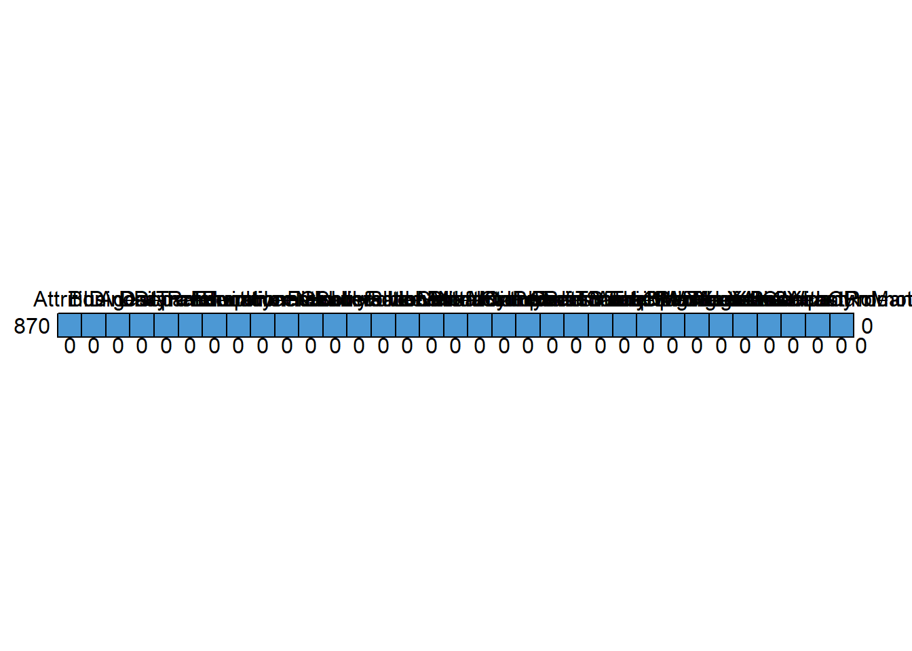
## Attrition ID Age BusinessTravel DailyRate Department DistanceFromHome Education EducationField EmployeeNumber EnvironmentSatisfaction Gender HourlyRate
## 870 1 1 1 1 1 1 1 1 1 1 1 1 1
## 0 0 0 0 0 0 0 0 0 0 0 0 0
## JobInvolvement JobLevel JobRole JobSatisfaction MaritalStatus MonthlyIncome MonthlyRate NumCompaniesWorked OverTime PercentSalaryHike PerformanceRating
## 870 1 1 1 1 1 1 1 1 1 1 1
## 0 0 0 0 0 0 0 0 0 0 0
## RelationshipSatisfaction StockOptionLevel TotalWorkingYears TrainingTimesLastYear WorkLifeBalance YearsAtCompany YearsInCurrentRole YearsSinceLastPromotion
## 870 1 1 1 1 1 1 1 1
## 0 0 0 0 0 0 0 0
## YearsWithCurrManager
## 870 1 0
## 0 0#Summary Statistics and Glimpse into DataTypes and first observations for Training
glimpse(talent_factor)## Rows: 870
## Columns: 33
## $ Attrition <fct> No, No, No, No, No, No, No, No, No, No, No, No, No, No, No, No, No, No, No, No, No, No, No, No, No, No, No, Yes, Yes, No, No, No, N...
## $ ID <int> 1, 2, 3, 4, 5, 6, 7, 8, 9, 10, 11, 12, 13, 14, 15, 16, 17, 18, 19, 20, 21, 22, 23, 24, 25, 26, 27, 28, 29, 30, 31, 32, 33, 34, 35, ...
## $ Age <int> 32, 40, 35, 32, 24, 27, 41, 37, 34, 34, 43, 28, 35, 30, 46, 31, 32, 46, 34, 44, 36, 48, 43, 31, 33, 44, 38, 33, 53, 52, 32, 33, 46,...
## $ BusinessTravel <fct> Travel_Rarely, Travel_Rarely, Travel_Frequently, Travel_Rarely, Travel_Frequently, Travel_Frequently, Travel_Rarely, Travel_Rarely,...
## $ DailyRate <int> 117, 1308, 200, 801, 567, 294, 1283, 309, 1333, 653, 823, 280, 950, 202, 991, 1188, 498, 1144, 181, 170, 913, 817, 1001, 715, 1069,...
## $ Department <fct> Sales, Research & Development, Research & Development, Sales, Research & Development, Research & Development, Research & Developmen...
## $ DistanceFromHome <int> 13, 14, 18, 1, 2, 10, 5, 10, 10, 10, 6, 1, 7, 2, 1, 20, 3, 7, 2, 1, 9, 2, 9, 2, 1, 5, 14, 9, 24, 19, 9, 21, 2, 1, 5, 7, 10, 13, 8, ...
## $ Education <int> 4, 3, 2, 4, 1, 2, 5, 4, 4, 4, 3, 2, 3, 1, 2, 2, 4, 4, 4, 4, 2, 1, 5, 4, 3, 3, 3, 4, 4, 4, 2, 3, 3, 4, 4, 3, 3, 5, 4, 3, 3, 2, 3, 2,...
## $ EducationField <fct> Life Sciences, Medical, Life Sciences, Marketing, Technical Degree, Life Sciences, Medical, Life Sciences, Life Sciences, Technical...
## $ EmployeeNumber <int> 859, 1128, 1412, 2016, 1646, 733, 1448, 1105, 1055, 1597, 1866, 1858, 845, 508, 1314, 947, 966, 487, 1755, 1903, 699, 712, 663, 161...
## $ EnvironmentSatisfaction <int> 2, 3, 3, 3, 1, 4, 2, 4, 3, 4, 1, 3, 3, 3, 4, 4, 3, 3, 4, 2, 2, 2, 4, 4, 2, 2, 3, 1, 1, 4, 4, 2, 3, 4, 4, 2, 4, 2, 4, 3, 2, 2, 4, 4,...
## $ Gender <fct> Male, Male, Male, Female, Female, Male, Male, Female, Female, Male, Female, Male, Male, Male, Female, Female, Female, Female, Male,...
## $ HourlyRate <int> 73, 44, 60, 48, 32, 32, 90, 88, 87, 92, 81, 43, 59, 72, 44, 45, 93, 30, 97, 78, 48, 56, 72, 54, 42, 88, 80, 77, 66, 41, 35, 79, 75,...
## $ JobInvolvement <int> 3, 2, 3, 3, 3, 3, 4, 2, 3, 2, 2, 3, 3, 3, 3, 3, 3, 3, 4, 4, 2, 4, 3, 3, 2, 3, 3, 3, 3, 3, 1, 4, 1, 2, 2, 4, 2, 2, 3, 4, 3, 1, 3, 2,...
## $ JobLevel <int> 2, 5, 3, 3, 1, 3, 1, 2, 1, 2, 5, 1, 3, 1, 1, 2, 2, 2, 1, 2, 2, 2, 2, 2, 2, 5, 2, 2, 3, 1, 2, 1, 4, 1, 2, 1, 3, 2, 5, 1, 4, 2, 1, 5,...
## $ JobRole <fct> Sales Executive, Research Director, Manufacturing Director, Sales Executive, Research Scientist, Manufacturing Director, Research S...
## $ JobSatisfaction <int> 4, 3, 4, 4, 4, 1, 3, 4, 3, 3, 3, 4, 3, 2, 1, 3, 1, 3, 4, 1, 2, 2, 3, 1, 4, 2, 2, 1, 1, 4, 4, 2, 2, 3, 4, 2, 1, 1, 2, 4, 2, 3, 1, 4,...
## $ MaritalStatus <fct> Divorced, Single, Single, Married, Single, Divorced, Married, Divorced, Married, Married, Married, Divorced, Single, Married, Singl...
## $ MonthlyIncome <int> 4403, 19626, 9362, 10422, 3760, 8793, 2127, 6694, 2220, 5063, 19392, 2706, 10221, 2476, 3423, 6932, 6725, 5258, 2932, 5033, 8847, 8...
## $ MonthlyRate <int> 9250, 17544, 19944, 24032, 17218, 4809, 5561, 24223, 18410, 15332, 22539, 10494, 18869, 17434, 22957, 24406, 13554, 16044, 5586, 93...
## $ NumCompaniesWorked <int> 2, 1, 2, 1, 1, 1, 2, 2, 1, 1, 7, 1, 3, 1, 6, 1, 1, 2, 0, 2, 2, 3, 3, 7, 0, 7, 0, 0, 6, 0, 0, 1, 3, 6, 8, 1, 9, 5, 6, 0, 4, 0, 4, 8,...
## $ OverTime <fct> No, No, No, No, Yes, No, Yes, Yes, Yes, No, No, No, No, No, No, No, No, No, Yes, No, Yes, No, Yes, No, No, No, No, Yes, Yes, No, No...
## $ PercentSalaryHike <int> 11, 14, 11, 19, 13, 21, 12, 14, 19, 14, 13, 15, 21, 18, 12, 13, 12, 14, 14, 15, 11, 12, 13, 13, 14, 11, 11, 17, 13, 18, 17, 18, 12,...
## $ PerformanceRating <int> 3, 3, 3, 3, 3, 4, 3, 3, 3, 3, 3, 3, 4, 3, 3, 3, 3, 3, 3, 3, 3, 3, 3, 3, 3, 3, 3, 3, 3, 3, 3, 3, 3, 3, 4, 4, 3, 3, 3, 3, 4, 3, 3, 4,...
## $ RelationshipSatisfaction <int> 3, 1, 3, 3, 3, 3, 1, 3, 4, 2, 4, 2, 2, 1, 3, 4, 3, 3, 1, 4, 3, 4, 2, 4, 1, 3, 4, 1, 2, 1, 4, 4, 2, 2, 2, 3, 3, 2, 1, 1, 4, 1, 2, 4,...
## $ StockOptionLevel <int> 1, 0, 0, 2, 0, 2, 0, 3, 1, 1, 0, 1, 0, 1, 0, 1, 1, 0, 3, 1, 1, 0, 1, 0, 0, 1, 1, 0, 0, 1, 3, 3, 1, 1, 0, 0, 0, 3, 0, 1, 1, 0, 1, 0,...
## $ TotalWorkingYears <int> 8, 21, 10, 14, 6, 9, 7, 8, 1, 8, 21, 3, 17, 1, 10, 9, 8, 7, 6, 10, 13, 12, 10, 10, 6, 26, 10, 6, 15, 5, 9, 14, 28, 10, 8, 5, 15, 16...
## $ TrainingTimesLastYear <int> 3, 2, 2, 3, 2, 4, 5, 5, 2, 3, 2, 2, 3, 3, 3, 2, 2, 2, 3, 5, 2, 3, 3, 3, 3, 5, 3, 3, 2, 3, 2, 6, 2, 2, 1, 3, 3, 3, 4, 4, 0, 3, 2, 2,...
## $ WorkLifeBalance <int> 2, 4, 3, 3, 3, 2, 2, 3, 3, 2, 3, 3, 4, 3, 4, 2, 4, 4, 3, 3, 3, 3, 3, 3, 3, 3, 3, 3, 2, 3, 4, 3, 2, 3, 3, 1, 3, 3, 3, 3, 2, 3, 2, 3,...
## $ YearsAtCompany <int> 5, 20, 2, 14, 6, 9, 4, 1, 1, 8, 16, 3, 8, 1, 7, 9, 8, 1, 5, 2, 3, 2, 8, 5, 5, 22, 9, 5, 2, 4, 8, 14, 7, 8, 1, 5, 13, 2, 7, 2, 16, 8...
## $ YearsInCurrentRole <int> 2, 7, 2, 10, 3, 7, 2, 0, 1, 2, 12, 2, 5, 0, 6, 8, 7, 0, 0, 0, 2, 2, 7, 2, 0, 9, 8, 2, 2, 3, 7, 11, 7, 0, 0, 1, 12, 2, 3, 2, 9, 7, 2...
## $ YearsSinceLastPromotion <int> 0, 4, 2, 5, 1, 1, 0, 0, 0, 7, 6, 2, 1, 0, 5, 0, 6, 0, 1, 2, 0, 2, 4, 0, 1, 3, 7, 0, 2, 1, 0, 2, 7, 1, 0, 0, 6, 2, 7, 2, 14, 3, 2, 0...
## $ YearsWithCurrManager <int> 3, 9, 2, 7, 3, 7, 3, 0, 0, 7, 14, 2, 6, 0, 7, 0, 3, 0, 2, 2, 2, 2, 7, 3, 4, 10, 7, 3, 2, 2, 7, 13, 7, 7, 0, 3, 0, 2, 7, 2, 14, 1, 2...summary(talent_factor)## Attrition ID Age BusinessTravel DailyRate Department DistanceFromHome Education
## No :730 Min. : 1.0 Min. :18.00 Non-Travel : 94 Min. : 103.0 Human Resources : 35 Min. : 1.000 Min. :1.000
## Yes:140 1st Qu.:218.2 1st Qu.:30.00 Travel_Frequently:158 1st Qu.: 472.5 Research & Development:562 1st Qu.: 2.000 1st Qu.:2.000
## Median :435.5 Median :35.00 Travel_Rarely :618 Median : 817.5 Sales :273 Median : 7.000 Median :3.000
## Mean :435.5 Mean :36.83 Mean : 815.2 Mean : 9.339 Mean :2.901
## 3rd Qu.:652.8 3rd Qu.:43.00 3rd Qu.:1165.8 3rd Qu.:14.000 3rd Qu.:4.000
## Max. :870.0 Max. :60.00 Max. :1499.0 Max. :29.000 Max. :5.000
##
## EducationField EmployeeNumber EnvironmentSatisfaction Gender HourlyRate JobInvolvement JobLevel JobRole
## Human Resources : 15 Min. : 1.0 Min. :1.000 Female:354 Min. : 30.00 Min. :1.000 Min. :1.000 Sales Executive :200
## Life Sciences :358 1st Qu.: 477.2 1st Qu.:2.000 Male :516 1st Qu.: 48.00 1st Qu.:2.000 1st Qu.:1.000 Research Scientist :172
## Marketing :100 Median :1039.0 Median :3.000 Median : 66.00 Median :3.000 Median :2.000 Laboratory Technician :153
## Medical :270 Mean :1029.8 Mean :2.701 Mean : 65.61 Mean :2.723 Mean :2.039 Manufacturing Director : 87
## Other : 52 3rd Qu.:1561.5 3rd Qu.:4.000 3rd Qu.: 83.00 3rd Qu.:3.000 3rd Qu.:3.000 Healthcare Representative: 76
## Technical Degree: 75 Max. :2064.0 Max. :4.000 Max. :100.00 Max. :4.000 Max. :5.000 Sales Representative : 53
## (Other) :129
## JobSatisfaction MaritalStatus MonthlyIncome MonthlyRate NumCompaniesWorked OverTime PercentSalaryHike PerformanceRating RelationshipSatisfaction
## Min. :1.000 Divorced:191 Min. : 1081 Min. : 2094 Min. :0.000 No :618 Min. :11.0 Min. :3.000 Min. :1.000
## 1st Qu.:2.000 Married :410 1st Qu.: 2840 1st Qu.: 8092 1st Qu.:1.000 Yes:252 1st Qu.:12.0 1st Qu.:3.000 1st Qu.:2.000
## Median :3.000 Single :269 Median : 4946 Median :14074 Median :2.000 Median :14.0 Median :3.000 Median :3.000
## Mean :2.709 Mean : 6390 Mean :14326 Mean :2.728 Mean :15.2 Mean :3.152 Mean :2.707
## 3rd Qu.:4.000 3rd Qu.: 8182 3rd Qu.:20456 3rd Qu.:4.000 3rd Qu.:18.0 3rd Qu.:3.000 3rd Qu.:4.000
## Max. :4.000 Max. :19999 Max. :26997 Max. :9.000 Max. :25.0 Max. :4.000 Max. :4.000
##
## StockOptionLevel TotalWorkingYears TrainingTimesLastYear WorkLifeBalance YearsAtCompany YearsInCurrentRole YearsSinceLastPromotion YearsWithCurrManager
## Min. :0.0000 Min. : 0.00 Min. :0.000 Min. :1.000 Min. : 0.000 Min. : 0.000 Min. : 0.000 Min. : 0.00
## 1st Qu.:0.0000 1st Qu.: 6.00 1st Qu.:2.000 1st Qu.:2.000 1st Qu.: 3.000 1st Qu.: 2.000 1st Qu.: 0.000 1st Qu.: 2.00
## Median :1.0000 Median :10.00 Median :3.000 Median :3.000 Median : 5.000 Median : 3.000 Median : 1.000 Median : 3.00
## Mean :0.7839 Mean :11.05 Mean :2.832 Mean :2.782 Mean : 6.962 Mean : 4.205 Mean : 2.169 Mean : 4.14
## 3rd Qu.:1.0000 3rd Qu.:15.00 3rd Qu.:3.000 3rd Qu.:3.000 3rd Qu.:10.000 3rd Qu.: 7.000 3rd Qu.: 3.000 3rd Qu.: 7.00
## Max. :3.0000 Max. :40.00 Max. :6.000 Max. :4.000 Max. :40.000 Max. :18.000 Max. :15.000 Max. :17.00
## Summary Statistics on additional Data Frames for validation datasets.
#Summary Statistics and Glimpse into DataTypes and first observations for Test sets
summary(talent_attrition_test)## ID Age BusinessTravel DailyRate Department DistanceFromHome Education EducationField EmployeeCount
## Min. :1171 Min. :19.00 Length:300 Min. : 102.0 Length:300 Min. : 1.00 Min. :1.000 Length:300 Min. :1
## 1st Qu.:1246 1st Qu.:31.00 Class :character 1st Qu.: 448.0 Class :character 1st Qu.: 2.00 1st Qu.:2.000 Class :character 1st Qu.:1
## Median :1320 Median :36.00 Mode :character Median : 775.0 Mode :character Median : 7.00 Median :3.000 Mode :character Median :1
## Mean :1320 Mean :37.86 Mean : 784.8 Mean : 9.26 Mean :2.973 Mean :1
## 3rd Qu.:1395 3rd Qu.:44.00 3rd Qu.:1117.0 3rd Qu.:14.00 3rd Qu.:4.000 3rd Qu.:1
## Max. :1470 Max. :60.00 Max. :1490.0 Max. :29.00 Max. :5.000 Max. :1
## EmployeeNumber EnvironmentSatisfaction Gender HourlyRate JobInvolvement JobLevel JobRole JobSatisfaction MaritalStatus
## Min. : 2.0 Min. :1.000 Length:300 Min. : 30.00 Min. :1.000 Min. :1.0 Length:300 Min. :1.000 Length:300
## 1st Qu.: 508.8 1st Qu.:2.000 Class :character 1st Qu.: 50.00 1st Qu.:2.000 1st Qu.:1.0 Class :character 1st Qu.:2.000 Class :character
## Median : 994.5 Median :3.000 Mode :character Median : 66.00 Median :3.000 Median :2.0 Mode :character Median :3.000 Mode :character
## Mean :1020.9 Mean :2.733 Mean : 66.07 Mean :2.743 Mean :2.2 Mean :2.767
## 3rd Qu.:1542.5 3rd Qu.:4.000 3rd Qu.: 83.00 3rd Qu.:3.000 3rd Qu.:3.0 3rd Qu.:4.000
## Max. :2065.0 Max. :4.000 Max. :100.00 Max. :4.000 Max. :5.0 Max. :4.000
## MonthlyIncome MonthlyRate NumCompaniesWorked Over18 OverTime PercentSalaryHike PerformanceRating RelationshipSatisfaction StandardHours
## Min. : 1232 Min. : 2097 Min. :0.000 Length:300 Length:300 Min. :11.00 Min. :3.000 Min. :1.000 Min. :80
## 1st Qu.: 3034 1st Qu.: 8420 1st Qu.:1.000 Class :character Class :character 1st Qu.:12.00 1st Qu.:3.000 1st Qu.:2.000 1st Qu.:80
## Median : 5208 Median :15091 Median :2.000 Mode :character Mode :character Median :14.00 Median :3.000 Median :3.000 Median :80
## Mean : 7103 Mean :14499 Mean :2.547 Mean :15.17 Mean :3.153 Mean :2.803 Mean :80
## 3rd Qu.: 9750 3rd Qu.:20330 3rd Qu.:4.000 3rd Qu.:18.00 3rd Qu.:3.000 3rd Qu.:4.000 3rd Qu.:80
## Max. :19973 Max. :26914 Max. :9.000 Max. :25.00 Max. :4.000 Max. :4.000 Max. :80
## StockOptionLevel TotalWorkingYears TrainingTimesLastYear WorkLifeBalance YearsAtCompany YearsInCurrentRole YearsSinceLastPromotion YearsWithCurrManager
## Min. :0.0000 Min. : 0.00 Min. :0.000 Min. :1.000 Min. : 0.000 Min. : 0.00 Min. : 0.00 Min. : 0.00
## 1st Qu.:0.0000 1st Qu.: 6.00 1st Qu.:2.000 1st Qu.:2.000 1st Qu.: 3.000 1st Qu.: 2.00 1st Qu.: 0.00 1st Qu.: 2.00
## Median :1.0000 Median :10.00 Median :2.000 Median :3.000 Median : 5.000 Median : 3.00 Median : 1.00 Median : 3.00
## Mean :0.7833 Mean :12.44 Mean :2.683 Mean :2.747 Mean : 7.527 Mean : 4.33 Mean : 2.29 Mean : 4.38
## 3rd Qu.:1.0000 3rd Qu.:18.00 3rd Qu.:3.000 3rd Qu.:3.000 3rd Qu.:10.000 3rd Qu.: 7.00 3rd Qu.: 3.00 3rd Qu.: 7.00
## Max. :3.0000 Max. :38.00 Max. :6.000 Max. :4.000 Max. :37.000 Max. :18.00 Max. :15.00 Max. :17.00summary(talent_salary_test)## ID Age Attrition BusinessTravel DailyRate Department DistanceFromHome Education EducationField
## Min. : 871.0 Min. :18.00 Length:300 Length:300 Min. : 105.0 Length:300 Min. : 1.00 Min. :1.000 Length:300
## 1st Qu.: 945.8 1st Qu.:29.00 Class :character Class :character 1st Qu.: 429.2 Class :character 1st Qu.: 2.00 1st Qu.:2.000 Class :character
## Median :1020.5 Median :36.00 Mode :character Mode :character Median : 693.0 Mode :character Median : 7.00 Median :3.000 Mode :character
## Mean :1020.5 Mean :36.27 Mean : 783.2 Mean : 8.70 Mean :2.887
## 3rd Qu.:1095.2 3rd Qu.:42.00 3rd Qu.:1171.2 3rd Qu.:11.25 3rd Qu.:4.000
## Max. :1170.0 Max. :60.00 Max. :1492.0 Max. :29.00 Max. :5.000
## EmployeeCount EmployeeNumber EnvironmentSatisfaction Gender HourlyRate JobInvolvement JobLevel JobRole JobSatisfaction
## Min. :1 Min. : 7 Min. :1.00 Length:300 Min. : 30.00 Min. :1.000 Min. :1 Length:300 Min. :1.000
## 1st Qu.:1 1st Qu.: 477 1st Qu.:2.00 Class :character 1st Qu.: 48.00 1st Qu.:2.000 1st Qu.:1 Class :character 1st Qu.:2.000
## Median :1 Median :1008 Median :3.00 Mode :character Median : 66.00 Median :3.000 Median :2 Mode :character Median :3.000
## Mean :1 Mean :1014 Mean :2.77 Mean : 66.52 Mean :2.737 Mean :2 Mean :2.747
## 3rd Qu.:1 3rd Qu.:1569 3rd Qu.:4.00 3rd Qu.: 85.25 3rd Qu.:3.000 3rd Qu.:2 3rd Qu.:4.000
## Max. :1 Max. :2068 Max. :4.00 Max. :100.00 Max. :4.000 Max. :5 Max. :4.000
## MaritalStatus MonthlyRate NumCompaniesWorked Over18 OverTime PercentSalaryHike PerformanceRating RelationshipSatisfaction StandardHours
## Length:300 Min. : 2122 Min. :0.00 Length:300 Length:300 Min. :11.00 Min. :3.00 Min. :1.000 Min. :80
## Class :character 1st Qu.: 7778 1st Qu.:1.00 Class :character Class :character 1st Qu.:12.75 1st Qu.:3.00 1st Qu.:2.000 1st Qu.:80
## Mode :character Median :13508 Median :2.00 Mode :character Mode :character Median :14.00 Median :3.00 Median :3.000 Median :80
## Mean :14091 Mean :2.74 Mean :15.28 Mean :3.16 Mean :2.637 Mean :80
## 3rd Qu.:20464 3rd Qu.:4.00 3rd Qu.:18.00 3rd Qu.:3.00 3rd Qu.:4.000 3rd Qu.:80
## Max. :26999 Max. :9.00 Max. :25.00 Max. :4.00 Max. :4.000 Max. :80
## StockOptionLevel TotalWorkingYears TrainingTimesLastYear WorkLifeBalance YearsAtCompany YearsInCurrentRole YearsSinceLastPromotion YearsWithCurrManager
## Min. :0.0000 Min. : 0.00 Min. :0.00 Min. :1.000 Min. : 0.000 Min. : 0.0 Min. : 0.00 Min. : 0.000
## 1st Qu.:0.0000 1st Qu.: 6.00 1st Qu.:2.00 1st Qu.:2.000 1st Qu.: 3.000 1st Qu.: 2.0 1st Qu.: 0.00 1st Qu.: 2.000
## Median :1.0000 Median : 9.00 Median :3.00 Median :3.000 Median : 5.000 Median : 3.0 Median : 1.00 Median : 3.000
## Mean :0.8333 Mean :10.78 Mean :2.82 Mean :2.717 Mean : 6.623 Mean : 4.2 Mean : 2.14 Mean : 3.817
## 3rd Qu.:1.0000 3rd Qu.:14.00 3rd Qu.:3.00 3rd Qu.:3.000 3rd Qu.: 9.000 3rd Qu.: 7.0 3rd Qu.: 3.00 3rd Qu.: 7.000
## Max. :3.0000 Max. :40.00 Max. :6.00 Max. :4.000 Max. :33.000 Max. :16.0 Max. :15.00 Max. :15.000Attrition Properties in source data. Dataset is fairly balanced.
prop.table(table(talent_factor$Attrition))##
## No Yes
## 0.8390805 0.1609195Create data frame of continuous variables and summarize means values for attrition factor. Creation Correlation Matrix for continuous variable.
talent_continuous <- talent_factor[, c("YearsWithCurrManager", "YearsSinceLastPromotion", "YearsInCurrentRole", "YearsAtCompany", "PerformanceRating",
"TotalWorkingYears", "PercentSalaryHike", "MonthlyIncome", "MonthlyRate", "HourlyRate", "DailyRate", "WorkLifeBalance", "OverTime",
"DistanceFromHome", "Age", "Attrition", "JobSatisfaction", "JobLevel", "RelationshipSatisfaction", "EnvironmentSatisfaction")]
talent_continuous$Attrition <- as.numeric(talent_continuous$Attrition) - 1
talent_continuous$OverTime <- as.numeric(talent_continuous$OverTime) - 1
employees_left <- talent_continuous %>% filter(talent_continuous$Attrition == 1)
employees_stayed <- talent_continuous %>% filter(talent_continuous$Attrition == 0)
mean_employees_left <- lapply(employees_left, mean)
mean_employees_stayed <- lapply(employees_stayed, mean)
mean_employees <- merge(mean_employees_left, mean_employees_stayed, all=TRUE)
mean_employees## YearsWithCurrManager YearsSinceLastPromotion YearsInCurrentRole YearsAtCompany PerformanceRating TotalWorkingYears PercentSalaryHike MonthlyIncome MonthlyRate
## 1 2.942857 2.135714 2.907143 5.192857 3.164286 8.185714 15.32857 4764.786 13624.29
## 2 4.369863 2.175342 4.453425 7.301370 3.149315 11.602740 15.17534 6702.000 14460.12
## HourlyRate DailyRate WorkLifeBalance OverTime DistanceFromHome Age Attrition JobSatisfaction JobLevel RelationshipSatisfaction EnvironmentSatisfaction
## 1 67.29286 784.2929 2.635714 0.5714286 10.957143 33.78571 1 2.435714 1.635714 2.607143 2.507143
## 2 65.29178 821.1603 2.809589 0.2356164 9.028767 37.41233 0 2.761644 2.116438 2.726027 2.738356# Age - Left Company (Y/N)
# - Yes = 33.78
# - No = 37.41
#
# Monthly Income
# - Yes = $4,764
# - No = $6,702
#
# Job Satisfaction | Environment Satisfaction | Relationship Satisfaction
# - Yes = 2.44 2.51 2.61
# - No = 2.76 2.73 2.72
#
# Years with Current Manager | Years Since Last Promo | Years in Current Role
# - Yes = 2.94 2.13 2.90
# - No = 4.369863 2.17 4.54
#
# Total Working Years
# - Yes = 8.19
# - No = 11.60
# Performance Rating | Percent Salary Hike
# - Yes = 3.16 15.33
# - No = 3.15 15.17
#
# Work Life | Dist from Home
# - Yes = 2.63 10.96
# - No = 2.80 9.02Correlation Matrix for data
correlations <- round(cor(talent_continuous), 1)
# method = "circle"
ggcorrplot(correlations, hc.order = TRUE, type = "lower",
lab = TRUE)
# During review of the correlation matrix, we can see high instances of correlation in the variables below.
# They will be removed in future analysis.
#
# High collinearity:
# - Performance Rating with Percent Salary Hike
# - Monthly Income with Job Level
# - Age and Total Working years
# - Years at Current Role with Years at Company
# - Years at Company with Years with Current Manager
#
# Variables to drop :
# - Percent Salary Hike
# - Job Level
# - Total Working Years
# - Years at CompanyAdditional insights from data
talent_factor$agegroup <- with(talent_factor, ifelse(Age < 25, "18-24", ifelse(Age < 34, "25-34", ifelse(Age < 44, "35-44", ifelse(Age < 52, "45 - 52", "Over53")))))
talent_attrition_test$agegroup <- with(talent_attrition_test, ifelse(Age < 25, "18-24", ifelse(Age < 34, "25-34", ifelse(Age < 44, "35-44", ifelse(Age < 52, "45 - 52", "Over53")))))
talent_salary_test$agegroup <- with(talent_salary_test, ifelse(Age < 25, "18-24", ifelse(Age < 34, "25-34", ifelse(Age < 44, "35-44", ifelse(Age < 52, "45 - 52", "Over53")))))
age_count <- table(talent_factor$agegroup)
barplot(age_count, main = "Age Count")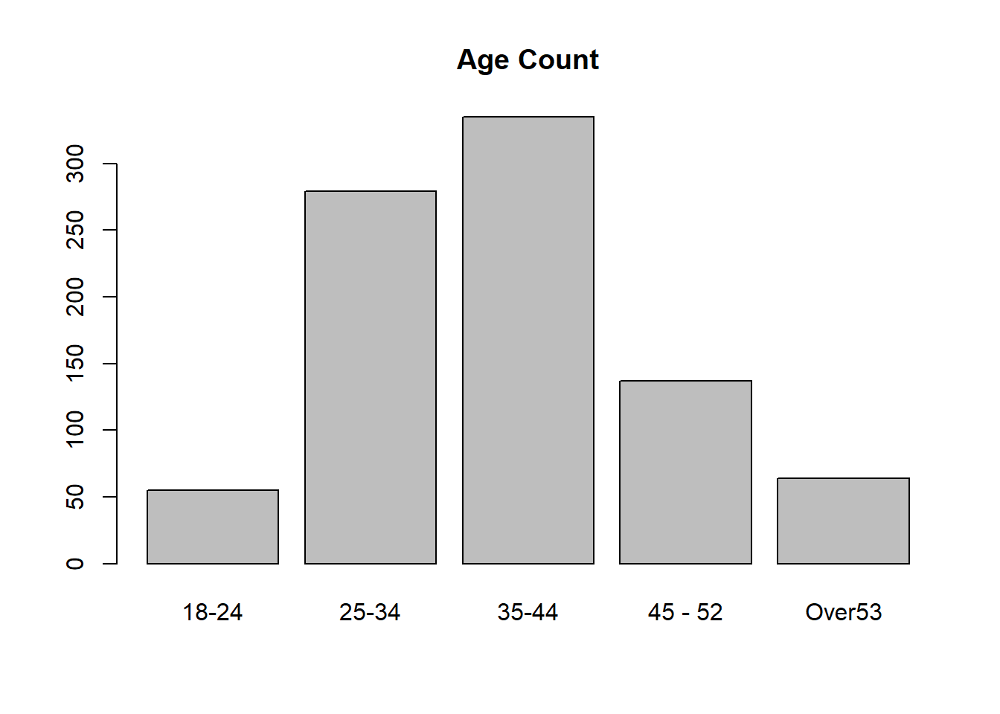
### Mean Salary for Job Title/ Education and Salary
talent_factor_jobtitle_mean <- talent_factor %>% dplyr::group_by(JobRole) %>% dplyr::summarise(MedSalary = median(MonthlyIncome, na.rm=TRUE),Meansatis= mean(JobSatisfaction, na.rm=TRUE))## `summarise()` ungrouping output (override with `.groups` argument)#Subsetting the job satisfaction data into top/bottoms
mean_jobsatisfaction <- talent_factor_jobtitle_mean %>% arrange(desc(Meansatis))
#Subsetting the salary data into top/bottoms
mean_salary <- talent_factor_jobtitle_mean %>% arrange(desc(MedSalary))
#Mean Job Satisfaction by Job Role
ggplot(mean_jobsatisfaction, aes(x=reorder(JobRole,-Meansatis),y=Meansatis,fill=JobRole)) + geom_bar(stat = "identity") + theme(plot.title = element_text(hjust=0.1), axis.text.x = element_text(hjust = 0.9, angle = 65)) + labs(x="Job Role", y="Mean Job Satisfaction", title = "Job Satisfaction by Title")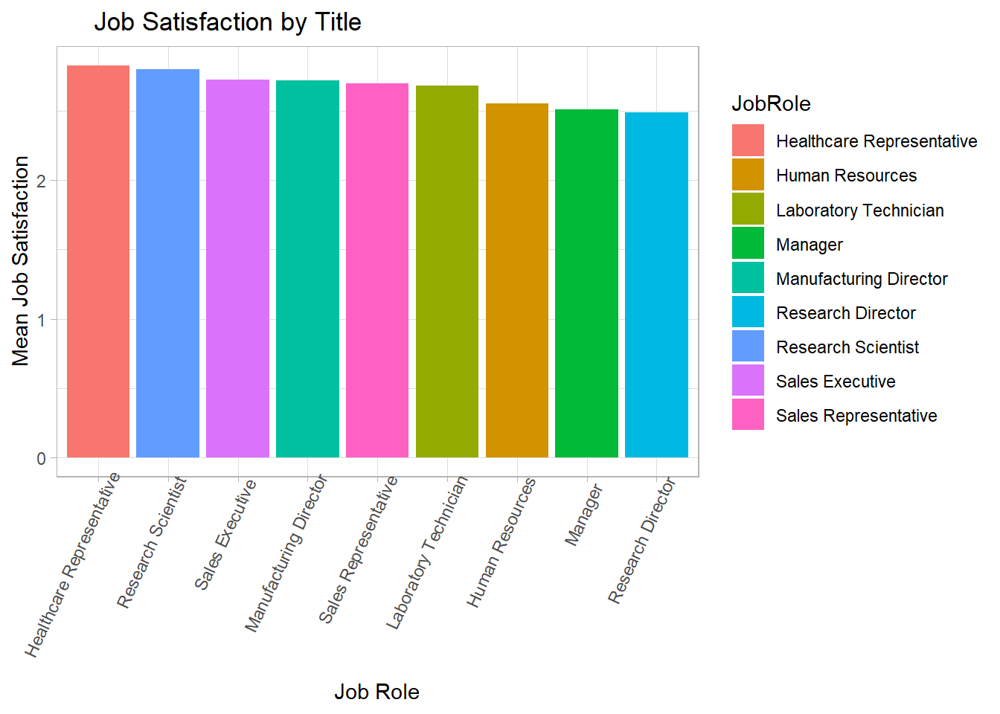
#Median Income by Job Role
ggplot(mean_salary, aes(x=reorder(JobRole,-MedSalary),y=MedSalary,fill=JobRole)) + geom_bar(stat = "identity") + theme(plot.title = element_text(hjust=0.1), axis.text.x = element_text(hjust = 0.9, angle = 65)) + labs(x="Job Role", y="Median Monthly Salary", title = "Median Monthly Salary by Title")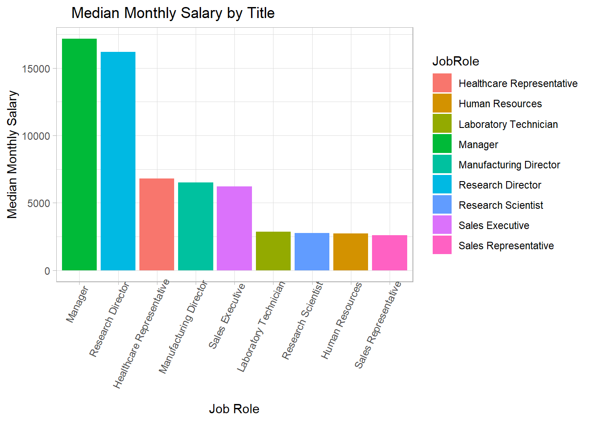
#Attrition plotting
Attritionplot <- ggplot(talent_factor, aes(x=DailyRate, y=MonthlyIncome), title ='Attrition') + geom_point()
Attritionplot + facet_wrap(~Attrition)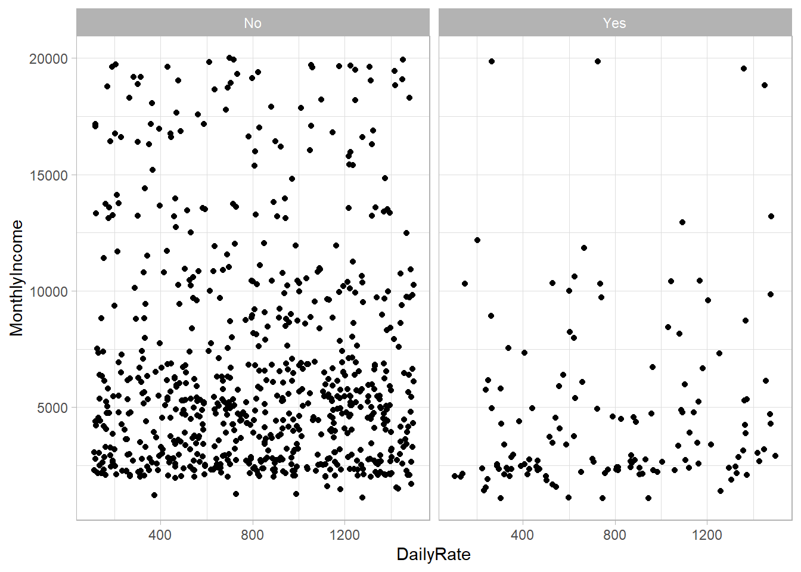
Satisfactionplot <- ggplot(talent_factor, aes(x=DailyRate, y=MonthlyIncome), title ='Attrition') + geom_point()
Attritionplot + facet_wrap(~JobSatisfaction)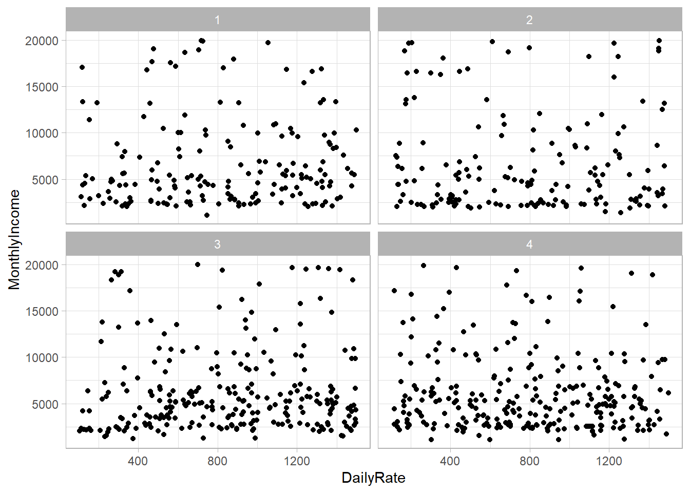
Attritionsat <- ggplot(talent_factor, aes(x=JobSatisfaction, y=MonthlyIncome), title ='Attrition') + geom_point()
Attritionsat + facet_wrap(~Attrition)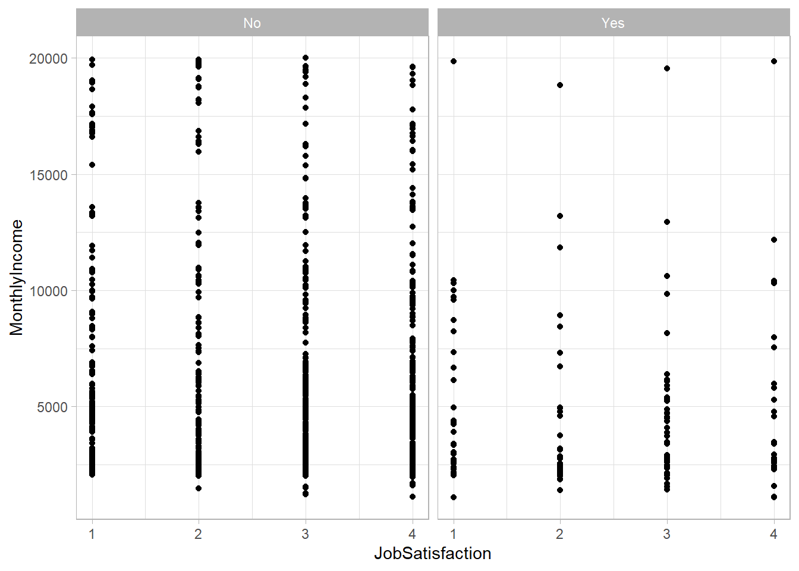
ggplot(talent_factor, aes(x=JobRole, fill=Attrition)) + geom_bar() + labs(x = "Job Role", y = "Number of Employees", title = "Attrition Job Role")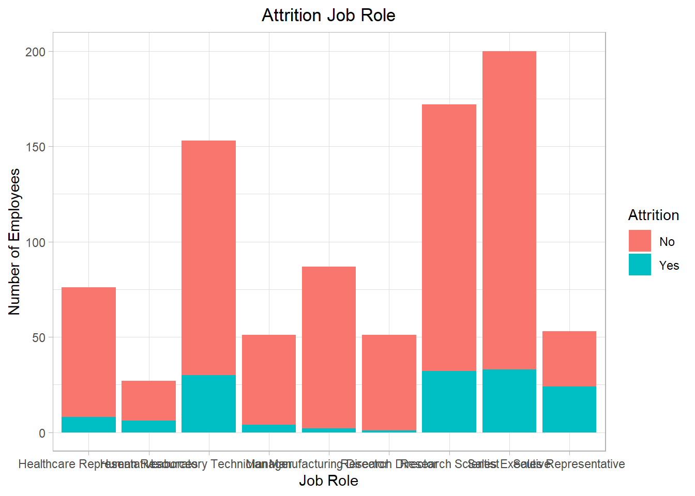
# Distance from home grouping
talent_factor$DistanceGrouping <- with(talent_factor, ifelse(DistanceFromHome > 25, "25+ Miles", ifelse(DistanceFromHome > 18, "19 - 25 Miles", ifelse(DistanceFromHome > 10, "11 - 18 Miles", ifelse(DistanceFromHome >5, "6 - 10 Miles", "Less than 6 Miles")))))
talent_attrition_test$DistanceGrouping <- with(talent_attrition_test, ifelse(DistanceFromHome > 25, "25+ Miles", ifelse(DistanceFromHome > 18, "19 - 25 Miles", ifelse(DistanceFromHome > 10, "11 - 18 Miles", ifelse(DistanceFromHome >5, "6 - 10 Miles", "Less than 6 Miles")))))
talent_salary_test$DistanceGrouping <- with(talent_salary_test, ifelse(DistanceFromHome > 25, "25+ Miles", ifelse(DistanceFromHome > 18, "19 - 25 Miles", ifelse(DistanceFromHome > 10, "11 - 18 Miles", ifelse(DistanceFromHome >5, "6 - 10 Miles", "Less than 6 Miles")))))
ggplot(talent_factor, aes(x=reorder(DistanceGrouping, DistanceFromHome), fill=Attrition)) + geom_bar() + labs(x = "Distance From Home Group", y = "Number of Employees", title = "Attrition and Distance from Home")
GGPairs broken down by various Talent Factor classes
##GGPairs Correlation matrix broken down into different themed groups
##Observations based upon the output
#Employee measurements
#People that left were younger
#People that left were less educated
talent_employee <- talent_factor %>% dplyr::select(Attrition, Age, Education, Gender, MaritalStatus)
ggpairs(talent_employee, aes(colour = Attrition))##
plot: [1,1] [=====>-------------------------------------------------------------------------------------------------------------------------------------] 4% est: 0s
plot: [1,2] [==========>--------------------------------------------------------------------------------------------------------------------------------] 8% est: 1s
plot: [1,3] [================>--------------------------------------------------------------------------------------------------------------------------] 12% est: 1s
plot: [1,4] [=====================>---------------------------------------------------------------------------------------------------------------------] 16% est: 1s
plot: [1,5] [===========================>---------------------------------------------------------------------------------------------------------------] 20% est: 1s
plot: [2,1] [================================>----------------------------------------------------------------------------------------------------------] 24% est: 1s `stat_bin()` using `bins = 30`. Pick better value with `binwidth`.
##
plot: [2,2] [======================================>----------------------------------------------------------------------------------------------------] 28% est: 1s
plot: [2,3] [===========================================>-----------------------------------------------------------------------------------------------] 32% est: 1s
plot: [2,4] [=================================================>-----------------------------------------------------------------------------------------] 36% est: 1s
plot: [2,5] [=======================================================>-----------------------------------------------------------------------------------] 40% est: 1s
plot: [3,1] [============================================================>------------------------------------------------------------------------------] 44% est: 1s `stat_bin()` using `bins = 30`. Pick better value with `binwidth`.
##
plot: [3,2] [==================================================================>------------------------------------------------------------------------] 48% est: 1s
plot: [3,3] [=======================================================================>-------------------------------------------------------------------] 52% est: 1s
plot: [3,4] [=============================================================================>-------------------------------------------------------------] 56% est: 1s
plot: [3,5] [==================================================================================>--------------------------------------------------------] 60% est: 1s
plot: [4,1] [========================================================================================>--------------------------------------------------] 64% est: 0s
plot: [4,2] [==============================================================================================>--------------------------------------------] 68% est: 0s `stat_bin()` using `bins = 30`. Pick better value with `binwidth`.
##
plot: [4,3] [===================================================================================================>---------------------------------------] 72% est: 0s `stat_bin()` using `bins = 30`. Pick better value with `binwidth`.
##
plot: [4,4] [=========================================================================================================>---------------------------------] 76% est: 0s
plot: [4,5] [==============================================================================================================>----------------------------] 80% est: 0s
plot: [5,1] [====================================================================================================================>----------------------] 84% est: 0s
plot: [5,2] [=========================================================================================================================>-----------------] 88% est: 0s `stat_bin()` using `bins = 30`. Pick better value with `binwidth`.
##
plot: [5,3] [===============================================================================================================================>-----------] 92% est: 0s `stat_bin()` using `bins = 30`. Pick better value with `binwidth`.
##
plot: [5,4] [====================================================================================================================================>------] 96% est: 0s
plot: [5,5] [===========================================================================================================================================]100% est: 0s
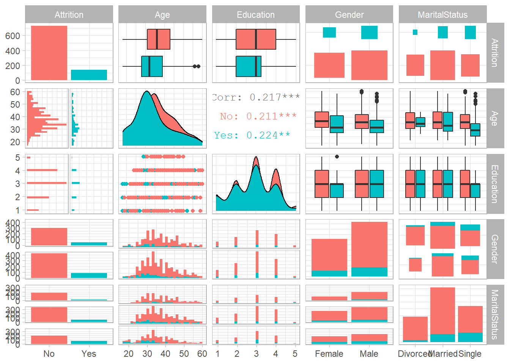
#Employer based measurements
#Pople who left had less time in role , at company, job level, enviornment satisfication
talent_company <- talent_factor %>% dplyr::select(Attrition, EnvironmentSatisfaction, JobInvolvement, YearsInCurrentRole, YearsAtCompany , JobLevel)
ggpairs(talent_company, aes(colour = Attrition))##
plot: [1,1] [===>---------------------------------------------------------------------------------------------------------------------------------------] 3% est: 0s
plot: [1,2] [=======>-----------------------------------------------------------------------------------------------------------------------------------] 6% est: 1s
plot: [1,3] [===========>-------------------------------------------------------------------------------------------------------------------------------] 8% est: 1s
plot: [1,4] [==============>----------------------------------------------------------------------------------------------------------------------------] 11% est: 1s
plot: [1,5] [==================>------------------------------------------------------------------------------------------------------------------------] 14% est: 1s
plot: [1,6] [======================>--------------------------------------------------------------------------------------------------------------------] 17% est: 1s
plot: [2,1] [==========================>----------------------------------------------------------------------------------------------------------------] 19% est: 1s `stat_bin()` using `bins = 30`. Pick better value with `binwidth`.
##
plot: [2,2] [==============================>------------------------------------------------------------------------------------------------------------] 22% est: 1s
plot: [2,3] [==================================>--------------------------------------------------------------------------------------------------------] 25% est: 1s
plot: [2,4] [======================================>----------------------------------------------------------------------------------------------------] 28% est: 1s
plot: [2,5] [=========================================>-------------------------------------------------------------------------------------------------] 31% est: 1s
plot: [2,6] [=============================================>---------------------------------------------------------------------------------------------] 33% est: 1s
plot: [3,1] [=================================================>-----------------------------------------------------------------------------------------] 36% est: 1s `stat_bin()` using `bins = 30`. Pick better value with `binwidth`.
##
plot: [3,2] [=====================================================>-------------------------------------------------------------------------------------] 39% est: 1s
plot: [3,3] [=========================================================>---------------------------------------------------------------------------------] 42% est: 1s
plot: [3,4] [=============================================================>-----------------------------------------------------------------------------] 44% est: 1s
plot: [3,5] [=================================================================>-------------------------------------------------------------------------] 47% est: 1s
plot: [3,6] [=====================================================================>---------------------------------------------------------------------] 50% est: 1s
plot: [4,1] [========================================================================>------------------------------------------------------------------] 53% est: 1s `stat_bin()` using `bins = 30`. Pick better value with `binwidth`.
##
plot: [4,2] [============================================================================>--------------------------------------------------------------] 56% est: 1s
plot: [4,3] [================================================================================>----------------------------------------------------------] 58% est: 1s
plot: [4,4] [====================================================================================>------------------------------------------------------] 61% est: 1s
plot: [4,5] [========================================================================================>--------------------------------------------------] 64% est: 1s
plot: [4,6] [============================================================================================>----------------------------------------------] 67% est: 1s
plot: [5,1] [================================================================================================>------------------------------------------] 69% est: 1s `stat_bin()` using `bins = 30`. Pick better value with `binwidth`.
##
plot: [5,2] [===================================================================================================>---------------------------------------] 72% est: 1s
plot: [5,3] [=======================================================================================================>-----------------------------------] 75% est: 0s
plot: [5,4] [===========================================================================================================>-------------------------------] 78% est: 0s
plot: [5,5] [===============================================================================================================>---------------------------] 81% est: 0s
plot: [5,6] [===================================================================================================================>-----------------------] 83% est: 0s
plot: [6,1] [=======================================================================================================================>-------------------] 86% est: 0s `stat_bin()` using `bins = 30`. Pick better value with `binwidth`.
##
plot: [6,2] [===========================================================================================================================>---------------] 89% est: 0s
plot: [6,3] [==============================================================================================================================>------------] 92% est: 0s
plot: [6,4] [==================================================================================================================================>--------] 94% est: 0s
plot: [6,5] [======================================================================================================================================>----] 97% est: 0s
plot: [6,6] [===========================================================================================================================================]100% est: 0s
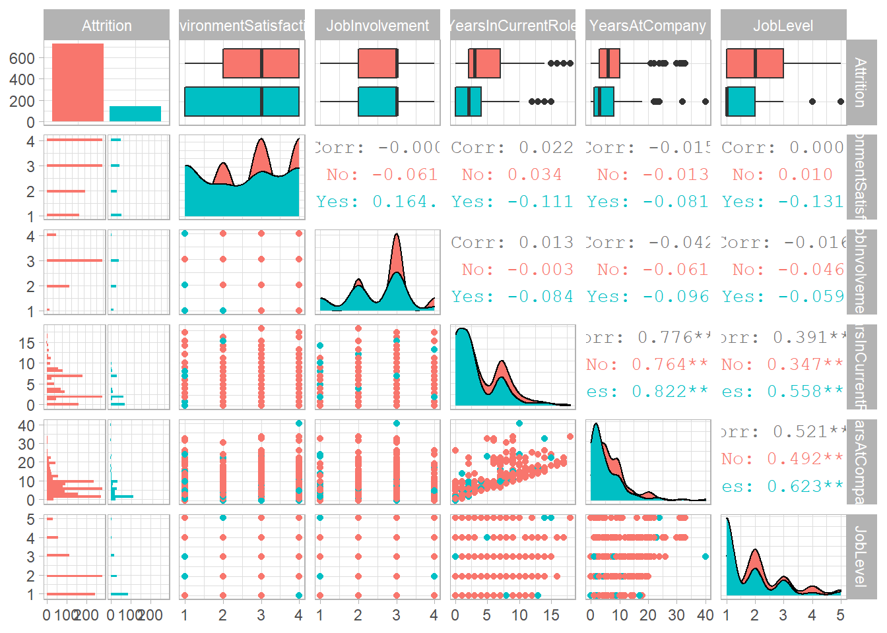
#EmployeeWorkLifeBalance
#Maybe distance from home
talent_wellbeing <- talent_factor %>% dplyr::select(Attrition, BusinessTravel, DistanceFromHome, WorkLifeBalance)
ggpairs(talent_wellbeing, aes(colour = Attrition))##
plot: [1,1] [========>----------------------------------------------------------------------------------------------------------------------------------] 6% est: 0s
plot: [1,2] [================>--------------------------------------------------------------------------------------------------------------------------] 12% est: 0s
plot: [1,3] [=========================>-----------------------------------------------------------------------------------------------------------------] 19% est: 0s
plot: [1,4] [==================================>--------------------------------------------------------------------------------------------------------] 25% est: 0s
plot: [2,1] [==========================================>------------------------------------------------------------------------------------------------] 31% est: 0s
plot: [2,2] [===================================================>---------------------------------------------------------------------------------------] 38% est: 0s
plot: [2,3] [============================================================>------------------------------------------------------------------------------] 44% est: 0s
plot: [2,4] [=====================================================================>---------------------------------------------------------------------] 50% est: 0s
plot: [3,1] [=============================================================================>-------------------------------------------------------------] 56% est: 0s `stat_bin()` using `bins = 30`. Pick better value with `binwidth`.
##
plot: [3,2] [======================================================================================>----------------------------------------------------] 62% est: 0s `stat_bin()` using `bins = 30`. Pick better value with `binwidth`.
##
plot: [3,3] [===============================================================================================>-------------------------------------------] 69% est: 0s
plot: [3,4] [=======================================================================================================>-----------------------------------] 75% est: 0s
plot: [4,1] [================================================================================================================>--------------------------] 81% est: 0s `stat_bin()` using `bins = 30`. Pick better value with `binwidth`.
##
plot: [4,2] [=========================================================================================================================>-----------------] 88% est: 0s `stat_bin()` using `bins = 30`. Pick better value with `binwidth`.
##
plot: [4,3] [=================================================================================================================================>---------] 94% est: 0s
plot: [4,4] [===========================================================================================================================================]100% est: 0s
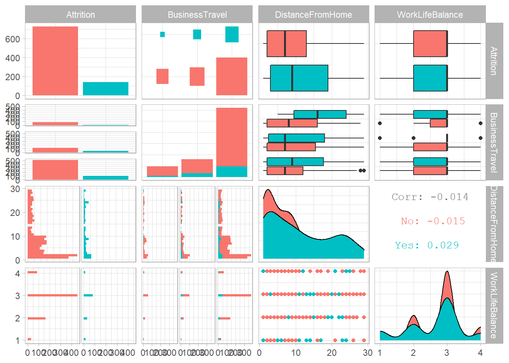
#Income Based Grouping
#Not Seeing strong correlation with attrition in relation to salary. Drop OverTime, StockOptionLevel no real info. Add SalaryHike
talent_income <- talent_factor %>% dplyr::select(Attrition, DailyRate, HourlyRate, MonthlyRate, MonthlyIncome, PercentSalaryHike )
ggpairs(talent_income, aes(colour = Attrition))##
plot: [1,1] [===>---------------------------------------------------------------------------------------------------------------------------------------] 3% est: 0s
plot: [1,2] [=======>-----------------------------------------------------------------------------------------------------------------------------------] 6% est: 1s
plot: [1,3] [===========>-------------------------------------------------------------------------------------------------------------------------------] 8% est: 1s
plot: [1,4] [==============>----------------------------------------------------------------------------------------------------------------------------] 11% est: 1s
plot: [1,5] [==================>------------------------------------------------------------------------------------------------------------------------] 14% est: 1s
plot: [1,6] [======================>--------------------------------------------------------------------------------------------------------------------] 17% est: 1s
plot: [2,1] [==========================>----------------------------------------------------------------------------------------------------------------] 19% est: 1s `stat_bin()` using `bins = 30`. Pick better value with `binwidth`.
##
plot: [2,2] [==============================>------------------------------------------------------------------------------------------------------------] 22% est: 1s
plot: [2,3] [==================================>--------------------------------------------------------------------------------------------------------] 25% est: 1s
plot: [2,4] [======================================>----------------------------------------------------------------------------------------------------] 28% est: 1s
plot: [2,5] [=========================================>-------------------------------------------------------------------------------------------------] 31% est: 1s
plot: [2,6] [=============================================>---------------------------------------------------------------------------------------------] 33% est: 1s
plot: [3,1] [=================================================>-----------------------------------------------------------------------------------------] 36% est: 1s `stat_bin()` using `bins = 30`. Pick better value with `binwidth`.
##
plot: [3,2] [=====================================================>-------------------------------------------------------------------------------------] 39% est: 1s
plot: [3,3] [=========================================================>---------------------------------------------------------------------------------] 42% est: 1s
plot: [3,4] [=============================================================>-----------------------------------------------------------------------------] 44% est: 1s
plot: [3,5] [=================================================================>-------------------------------------------------------------------------] 47% est: 1s
plot: [3,6] [=====================================================================>---------------------------------------------------------------------] 50% est: 1s
plot: [4,1] [========================================================================>------------------------------------------------------------------] 53% est: 1s `stat_bin()` using `bins = 30`. Pick better value with `binwidth`.
##
plot: [4,2] [============================================================================>--------------------------------------------------------------] 56% est: 1s
plot: [4,3] [================================================================================>----------------------------------------------------------] 58% est: 1s
plot: [4,4] [====================================================================================>------------------------------------------------------] 61% est: 1s
plot: [4,5] [========================================================================================>--------------------------------------------------] 64% est: 1s
plot: [4,6] [============================================================================================>----------------------------------------------] 67% est: 1s
plot: [5,1] [================================================================================================>------------------------------------------] 69% est: 1s `stat_bin()` using `bins = 30`. Pick better value with `binwidth`.
##
plot: [5,2] [===================================================================================================>---------------------------------------] 72% est: 1s
plot: [5,3] [=======================================================================================================>-----------------------------------] 75% est: 0s
plot: [5,4] [===========================================================================================================>-------------------------------] 78% est: 0s
plot: [5,5] [===============================================================================================================>---------------------------] 81% est: 0s
plot: [5,6] [===================================================================================================================>-----------------------] 83% est: 0s
plot: [6,1] [=======================================================================================================================>-------------------] 86% est: 0s `stat_bin()` using `bins = 30`. Pick better value with `binwidth`.
##
plot: [6,2] [===========================================================================================================================>---------------] 89% est: 0s
plot: [6,3] [==============================================================================================================================>------------] 92% est: 0s
plot: [6,4] [==================================================================================================================================>--------] 94% est: 0s
plot: [6,5] [======================================================================================================================================>----] 97% est: 0s
plot: [6,6] [===========================================================================================================================================]100% est: 0s
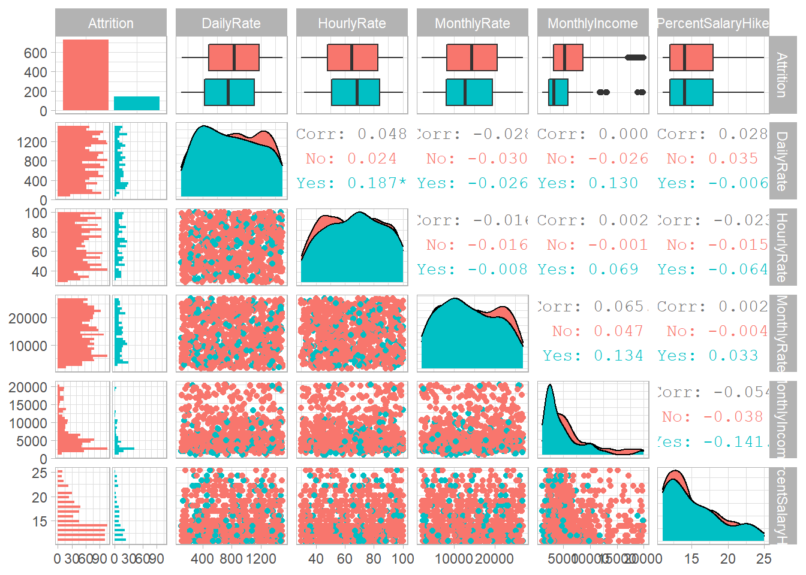
Scatterplots of additional data points for review. Visually show employees who left made less, were younger, and had last time invested in the job and with the company.
# People who left salary left made less over time
ggscatter(
talent_factor, x = "TotalWorkingYears", y = "MonthlyIncome",
color = "Attrition", palette = "jco",
add = "reg.line"
) +
facet_wrap(~Attrition) +
stat_cor(label.y = 5.4) +
stat_regline_equation()## `geom_smooth()` using formula 'y ~ x'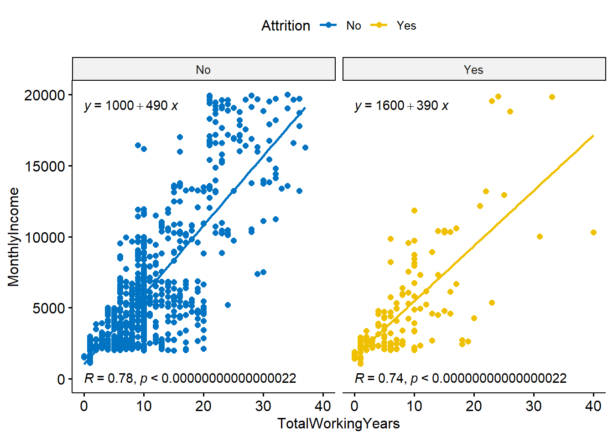
# People who left made less to start but slalary increased same
ggscatter(
talent_factor, x = "YearsAtCompany", y = "MonthlyIncome",
color = "Attrition", palette = "jco",
add = "reg.line"
) +
facet_wrap(~Attrition) +
stat_cor(label.y = 5.4) +
stat_regline_equation()## `geom_smooth()` using formula 'y ~ x'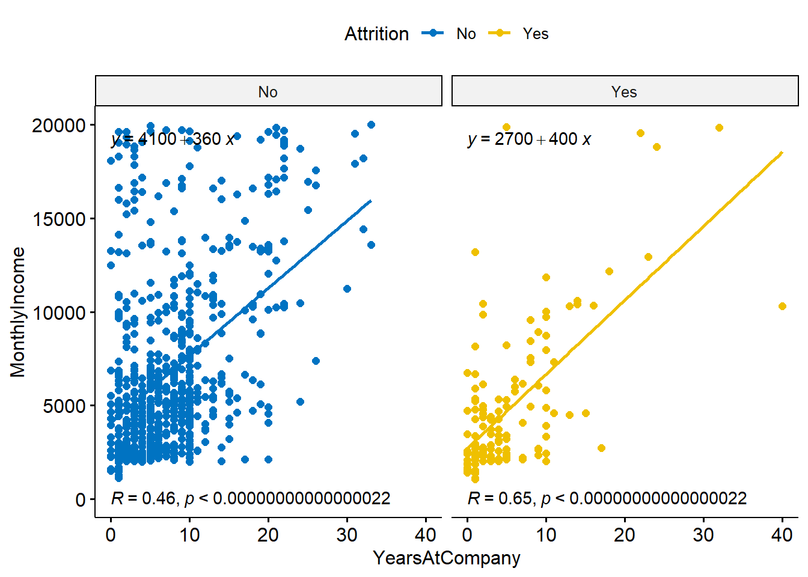
# People who left had fewer total working year and years at company
ggscatter(
talent_factor, x = "TotalWorkingYears", y = "YearsAtCompany",
color = "Attrition", palette = "jco",
add = "reg.line"
) +
facet_wrap(~Attrition) +
stat_cor(label.y = 5.4) +
stat_regline_equation()## `geom_smooth()` using formula 'y ~ x'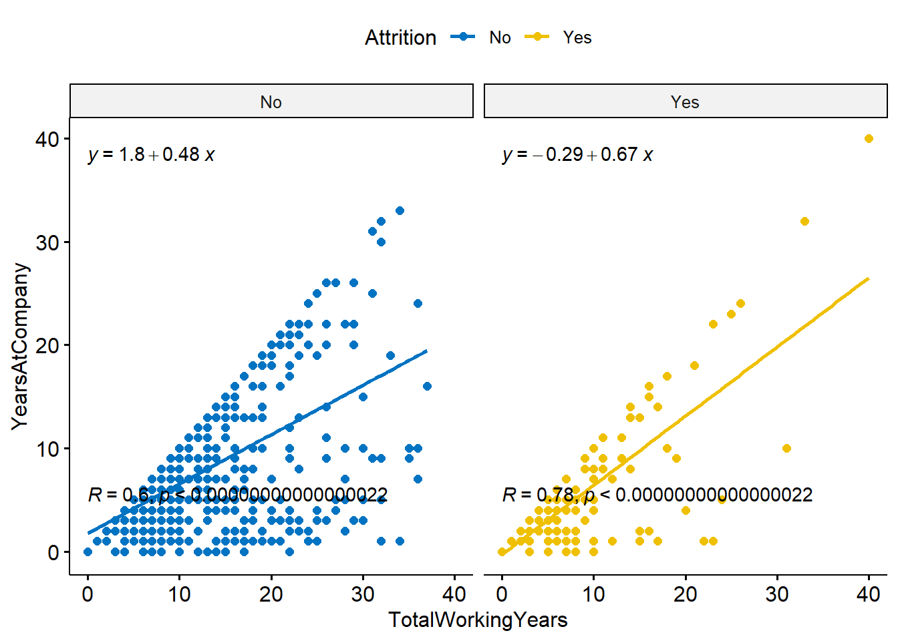
# People who left had fewer years with current manager / current role (to start with)
ggscatter(
talent_factor, x = "YearsWithCurrManager", y = "TotalWorkingYears",
color = "Attrition", palette = "jco",
add = "reg.line"
) +
facet_wrap(~Attrition) +
stat_cor(label.y = 5.4) +
stat_regline_equation()## `geom_smooth()` using formula 'y ~ x'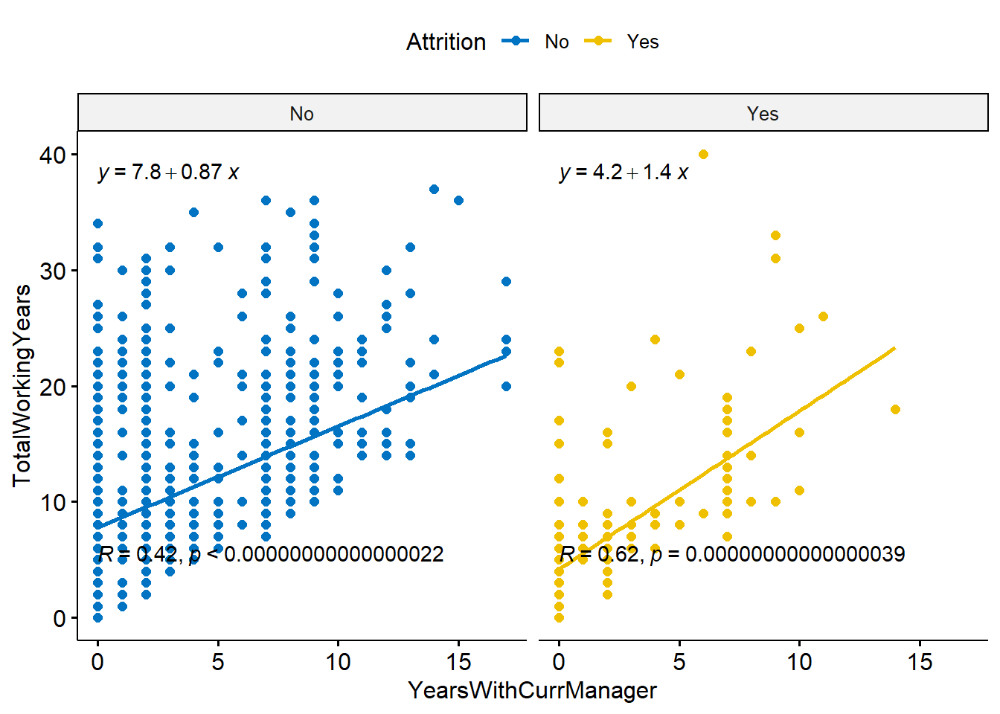
# People who left had fewer years in current role (to start with)
ggscatter(
talent_factor, x = "YearsInCurrentRole", y = "TotalWorkingYears",
color = "Attrition", palette = "jco",
add = "reg.line"
) +
facet_wrap(~Attrition) +
stat_cor(label.y = 5.4) +
stat_regline_equation()## `geom_smooth()` using formula 'y ~ x'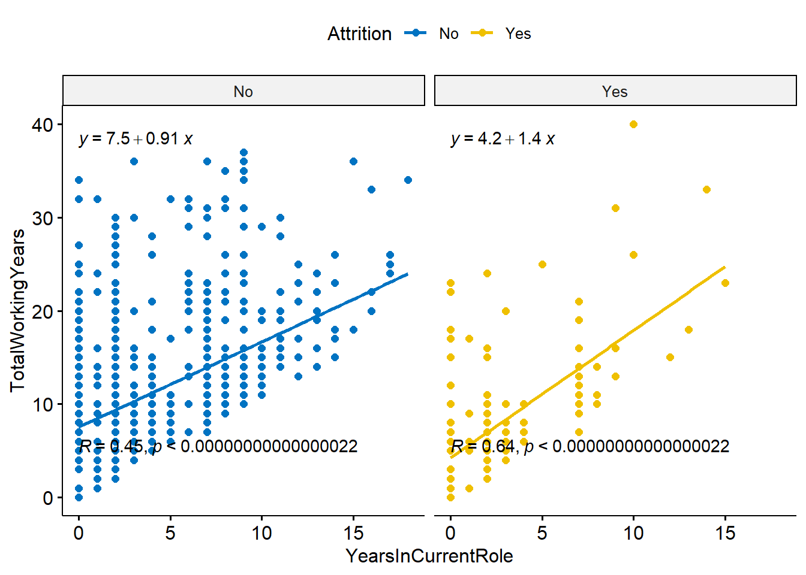
# Attrition -> People who left at 1/2 as much time at current company (to start)
ggscatter(
talent_factor, x = "YearsWithCurrManager", y = "YearsAtCompany",
color = "Attrition", palette = "jco",
add = "reg.line"
) +
facet_wrap(~Attrition) +
stat_cor(label.y = 5.4) +
stat_regline_equation()## `geom_smooth()` using formula 'y ~ x'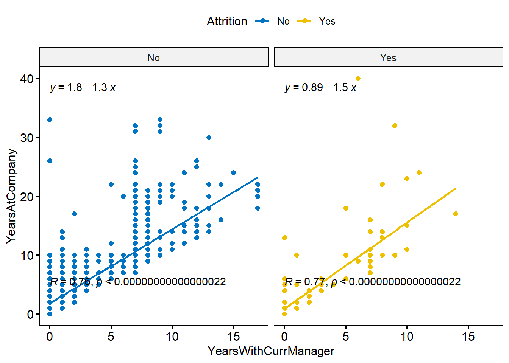
# Attrition -> People who left at 1/2 as much time at current company (to start)
ggscatter(
talent_factor, x = "YearsInCurrentRole", y = "YearsAtCompany",
color = "Attrition", palette = "jco",
add = "reg.line"
) +
facet_wrap(~Attrition) +
stat_cor(label.y = 5.4) +
stat_regline_equation()## `geom_smooth()` using formula 'y ~ x'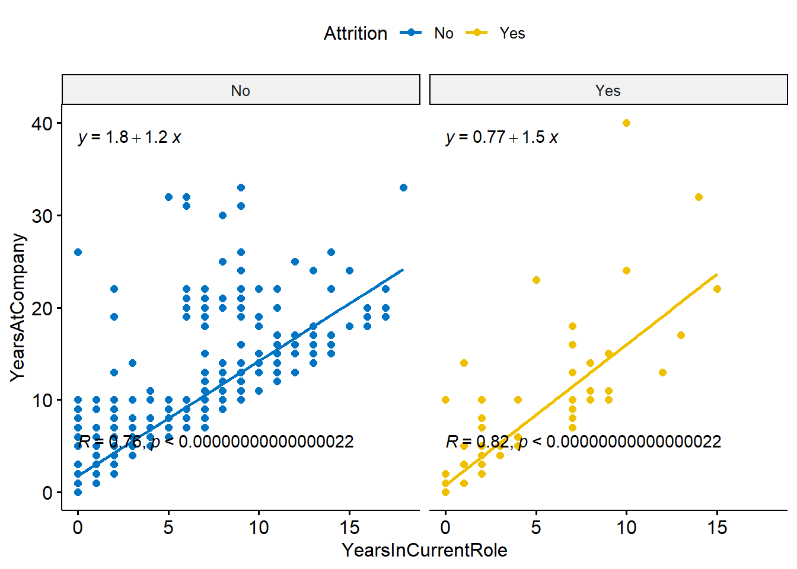
# Attrition -> People with left had 1/2 the time with current manager since last promotion (same as below, can remove one)
ggscatter(
talent_factor, x = "YearsSinceLastPromotion", y = "YearsInCurrentRole",
color = "Attrition", palette = "jco",
add = "reg.line"
) +
facet_wrap(~Attrition) +
stat_cor(label.y = 5.4) +
stat_regline_equation()## `geom_smooth()` using formula 'y ~ x'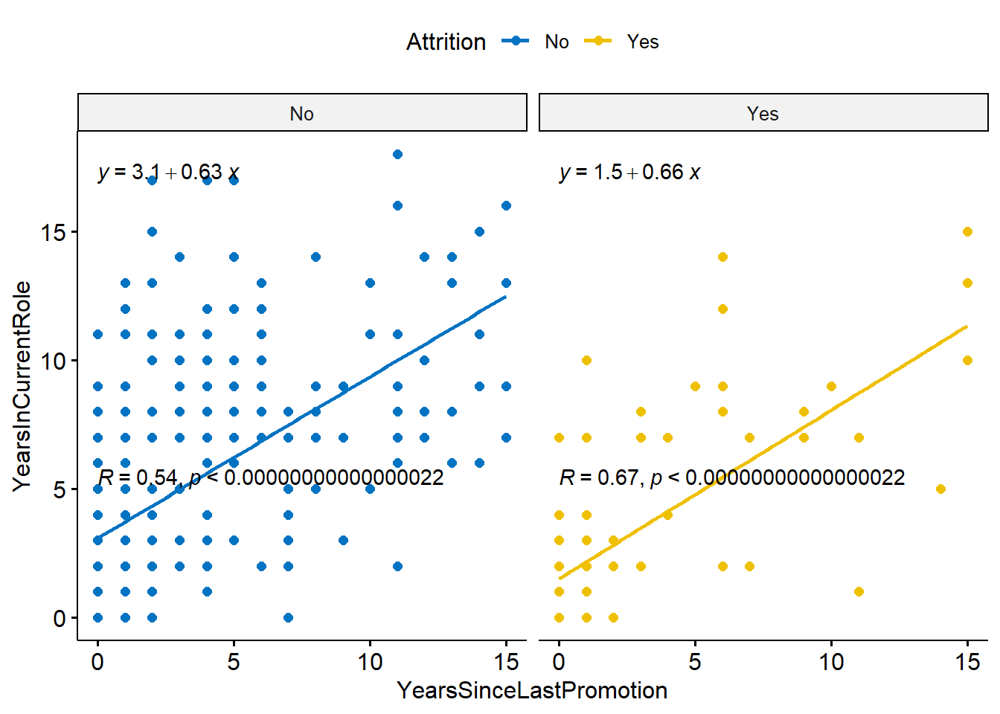
# Attrition -> People with left had 1/2 the time with current manager since last promotion
ggscatter(
talent_factor, x = "YearsSinceLastPromotion", y = "YearsWithCurrManager",
color = "Attrition", palette = "jco",
add = "reg.line"
) +
facet_wrap(~Attrition) +
stat_cor(label.y = 5.4) +
stat_regline_equation()## `geom_smooth()` using formula 'y ~ x'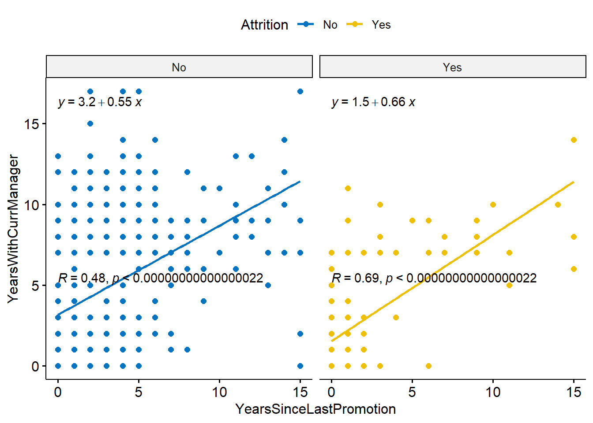
# Attrition -> High correlation with same manager and number of years in current role
ggscatter(
talent_factor, x = "YearsInCurrentRole", y = "YearsWithCurrManager",
color = "Attrition", palette = "jco",
add = "reg.line"
) +
facet_wrap(~Attrition) +
stat_cor(label.y = 5.4) +
stat_regline_equation()## `geom_smooth()` using formula 'y ~ x'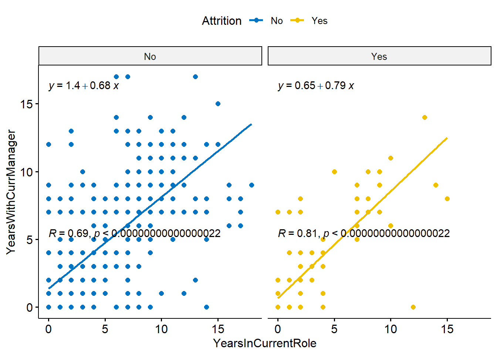
Modeling our Analysis Global Values for seed and train and test data. Remove variables with high correlation.
#This will be the dataset we use to model our Attrition and Salary Prediction
set.seed(453)
### Removed high correlation variables from set
splitPerc = .70
talent_factor_model <- talent_factor %>% dplyr::select(everything(), -YearsAtCompany, -TotalWorkingYears, -JobLevel, -PercentSalaryHike )
trainInd <- sample(1:dim(talent_factor_model)[1],round(splitPerc * dim(talent_factor_model)[1]))
talent_factor_model_Train = talent_factor_model[trainInd,]
talent_factor_model_Test = talent_factor_model[-trainInd,]Attrition Classification - Linear Regression
#Linear Model
talent_attrition_lm <- lm(Attrition ~., data=talent_factor_model_Train)## Warning in model.response(mf, "numeric"): using type = "numeric" with a factor response will be ignored## Warning in Ops.factor(y, z$residuals): '-' not meaningful for factorstalent_attrition_lm##
## Call:
## lm(formula = Attrition ~ ., data = talent_factor_model_Train)
##
## Coefficients:
## (Intercept) ID Age BusinessTravelTravel_Frequently
## 2.026111137 0.000001957 -0.003651428 0.074786508
## BusinessTravelTravel_Rarely DailyRate DepartmentResearch & Development DepartmentSales
## 0.026166302 -0.000023211 0.040615551 0.058248583
## DistanceFromHome Education EducationFieldLife Sciences EducationFieldMarketing
## -0.002293172 -0.010171566 -0.220195107 -0.254768922
## EducationFieldMedical EducationFieldOther EducationFieldTechnical Degree EmployeeNumber
## -0.195750551 -0.237786105 -0.178901861 -0.000021563
## EnvironmentSatisfaction GenderMale HourlyRate JobInvolvement
## -0.034085728 0.008411764 0.000498024 -0.065081783
## JobRoleHuman Resources JobRoleLaboratory Technician JobRoleManager JobRoleManufacturing Director
## -0.006825968 0.049920205 -0.149693153 -0.105179159
## JobRoleResearch Director JobRoleResearch Scientist JobRoleSales Executive JobRoleSales Representative
## -0.200350300 -0.045377377 -0.032329301 0.189671685
## JobSatisfaction MaritalStatusMarried MaritalStatusSingle MonthlyIncome
## -0.037709023 0.073695181 0.139198122 0.000003013
## MonthlyRate NumCompaniesWorked OverTimeYes PerformanceRating
## -0.000001578 0.024047624 0.225607390 0.000088163
## RelationshipSatisfaction StockOptionLevel TrainingTimesLastYear WorkLifeBalance
## -0.011832837 -0.010707187 -0.022411356 -0.033140683
## YearsInCurrentRole YearsSinceLastPromotion YearsWithCurrManager agegroup25-34
## -0.007640878 0.017726648 -0.007048064 0.006018470
## agegroup35-44 agegroup45 - 52 agegroupOver53 DistanceGrouping19 - 25 Miles
## -0.108884867 -0.035349069 0.057856501 0.034064711
## DistanceGrouping25+ Miles DistanceGrouping6 - 10 Miles DistanceGroupingLess than 6 Miles
## -0.033624586 -0.099636221 -0.122468431Naive Bayes Produces lower sensitivity. Accuracy and specificity are ok.
NB_model = naiveBayes(talent_factor_model_Train[,-1],as.factor(talent_factor_model_Train$Attrition),laplace = 1)
table(predict(NB_model,talent_factor_model_Test[,-1]),as.factor(talent_factor_model_Test$Attrition))##
## No Yes
## No 203 19
## Yes 20 19CM = confusionMatrix(table(predict(NB_model,talent_factor_model_Test[,-1]),as.factor(talent_factor_model_Test$Attrition)))
CM## Confusion Matrix and Statistics
##
##
## No Yes
## No 203 19
## Yes 20 19
##
## Accuracy : 0.8506
## 95% CI : (0.8014, 0.8915)
## No Information Rate : 0.8544
## P-Value [Acc > NIR] : 0.6112
##
## Kappa : 0.4059
##
## Mcnemar's Test P-Value : 1.0000
##
## Sensitivity : 0.9103
## Specificity : 0.5000
## Pos Pred Value : 0.9144
## Neg Pred Value : 0.4872
## Prevalence : 0.8544
## Detection Rate : 0.7778
## Detection Prevalence : 0.8506
## Balanced Accuracy : 0.7052
##
## 'Positive' Class : No
## draw_confusion_matrix <- function(cm,Class1,Class2) {
layout(matrix(c(1,1,2)))
par(mar=c(2,2,2,2))
plot(c(100, 345), c(300, 450), type = "n", xlab="", ylab="", xaxt='n', yaxt='n')
title('CONFUSION MATRIX', cex.main=2)
# create the matrix
rect(150, 430, 240, 370, col='#3F97D0')
text(195, 435, Class1, cex=1.2)
rect(250, 430, 340, 370, col='#F7AD50')
text(295, 435, Class2, cex=1.2)
text(125, 370, 'Predicted', cex=1.3, srt=90, font=2)
text(245, 450, 'Actual', cex=1.3, font=2)
rect(150, 305, 240, 365, col='#F7AD50')
rect(250, 305, 340, 365, col='#3F97D0')
text(140, 400, Class1, cex=1.2, srt=90)
text(140, 335, Class2, cex=1.2, srt=90)
# add in the cm results
res <- as.numeric(cm$table)
text(195, 400, res[1], cex=1.6, font=2, col='white')
text(195, 335, res[2], cex=1.6, font=2, col='white')
text(295, 400, res[3], cex=1.6, font=2, col='white')
text(295, 335, res[4], cex=1.6, font=2, col='white')
# add in the specifics
plot(c(100, 0), c(100, 0), type = "n", xlab="", ylab="", main = "DETAILS", xaxt='n', yaxt='n')
text(10, 85, names(cm$byClass[1]), cex=1.2, font=2)
text(10, 70, round(as.numeric(cm$byClass[1]), 3), cex=1.2)
text(30, 85, names(cm$byClass[2]), cex=1.2, font=2)
text(30, 70, round(as.numeric(cm$byClass[2]), 3), cex=1.2)
text(50, 85, names(cm$byClass[5]), cex=1.2, font=2)
text(50, 70, round(as.numeric(cm$byClass[5]), 3), cex=1.2)
text(70, 85, names(cm$byClass[6]), cex=1.2, font=2)
text(70, 70, round(as.numeric(cm$byClass[6]), 3), cex=1.2)
text(90, 85, names(cm$byClass[7]), cex=1.2, font=2)
text(90, 70, round(as.numeric(cm$byClass[7]), 3), cex=1.2)
# add in the accuracy information
text(30, 35, names(cm$overall[1]), cex=1.5, font=2)
text(30, 20, round(as.numeric(cm$overall[1]), 3), cex=1.4)
text(70, 35, names(cm$overall[2]), cex=1.5, font=2)
text(70, 20, round(as.numeric(cm$overall[2]), 3), cex=1.4)
}
draw_confusion_matrix(CM,"NO","YES")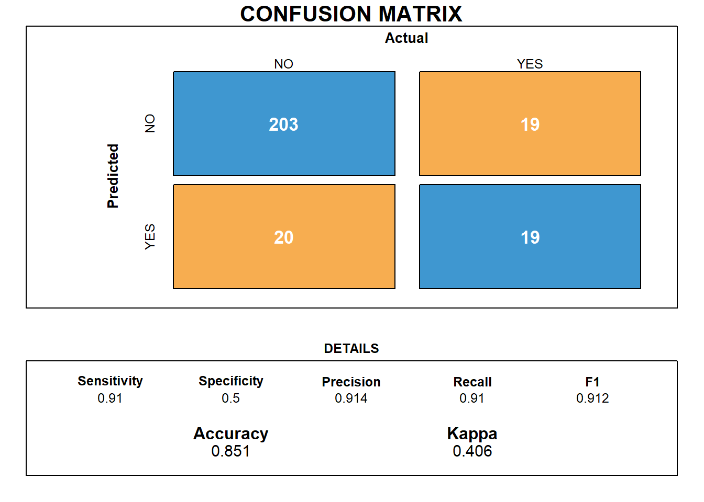
Random Forest. Best model. 70% specificity and high accuracy and sensitivity.
RF_talent_factor_model_train <- train(Attrition ~., talent_factor_model_Train, method = 'rf', trControl = trainControl(method='repeatedcv'), importance = T)
predTrain <- predict(RF_talent_factor_model_train, talent_factor_model_Test)
confusionMatrix(table(talent_factor_model_Test$Attrition, predTrain))## Confusion Matrix and Statistics
##
## predTrain
## No Yes
## No 220 3
## Yes 31 7
##
## Accuracy : 0.8697
## 95% CI : (0.8227, 0.9081)
## No Information Rate : 0.9617
## P-Value [Acc > NIR] : 1
##
## Kappa : 0.2459
##
## Mcnemar's Test P-Value : 0.000003649
##
## Sensitivity : 0.8765
## Specificity : 0.7000
## Pos Pred Value : 0.9865
## Neg Pred Value : 0.1842
## Prevalence : 0.9617
## Detection Rate : 0.8429
## Detection Prevalence : 0.8544
## Balanced Accuracy : 0.7882
##
## 'Positive' Class : No
## cMatrixRF <- table(predTrain, talent_factor_model_Test$Attrition)
plot(cMatrixRF, col="blue", ylab="Actual", xlab="Predicted", main='Random Forest Confusion Matrix')
draw_confusion_matrix <- function(cm,Class1,Class2) {
layout(matrix(c(1,1,2)))
par(mar=c(2,2,2,2))
plot(c(100, 345), c(300, 450), type = "n", xlab="", ylab="", xaxt='n', yaxt='n')
title('CONFUSION MATRIX', cex.main=2)
# create the matrix
rect(150, 430, 240, 370, col='#3F97D0')
text(195, 435, Class1, cex=1.2)
rect(250, 430, 340, 370, col='#F7AD50')
text(295, 435, Class2, cex=1.2)
text(125, 370, 'Predicted', cex=1.3, srt=90, font=2)
text(245, 450, 'Actual', cex=1.3, font=2)
rect(150, 305, 240, 365, col='#F7AD50')
rect(250, 305, 340, 365, col='#3F97D0')
text(140, 400, Class1, cex=1.2, srt=90)
text(140, 335, Class2, cex=1.2, srt=90)
# add in the cm results
res <- as.numeric(cm$table)
text(195, 400, res[1], cex=1.6, font=2, col='white')
text(195, 335, res[2], cex=1.6, font=2, col='white')
text(295, 400, res[3], cex=1.6, font=2, col='white')
text(295, 335, res[4], cex=1.6, font=2, col='white')
# add in the specifics
plot(c(100, 0), c(100, 0), type = "n", xlab="", ylab="", main = "DETAILS", xaxt='n', yaxt='n')
text(10, 85, names(cm$byClass[1]), cex=1.2, font=2)
text(10, 70, round(as.numeric(cm$byClass[1]), 3), cex=1.2)
text(30, 85, names(cm$byClass[2]), cex=1.2, font=2)
text(30, 70, round(as.numeric(cm$byClass[2]), 3), cex=1.2)
text(50, 85, names(cm$byClass[5]), cex=1.2, font=2)
text(50, 70, round(as.numeric(cm$byClass[5]), 3), cex=1.2)
text(70, 85, names(cm$byClass[6]), cex=1.2, font=2)
text(70, 70, round(as.numeric(cm$byClass[6]), 3), cex=1.2)
text(90, 85, names(cm$byClass[7]), cex=1.2, font=2)
text(90, 70, round(as.numeric(cm$byClass[7]), 3), cex=1.2)
# add in the accuracy information
text(30, 35, names(cm$overall[1]), cex=1.5, font=2)
text(30, 20, round(as.numeric(cm$overall[1]), 3), cex=1.4)
text(70, 35, names(cm$overall[2]), cex=1.5, font=2)
text(70, 20, round(as.numeric(cm$overall[2]), 3), cex=1.4)
}
draw_confusion_matrix(confusionMatrix(table(talent_factor_model_Test$Attrition, predTrain)),"NO","YES")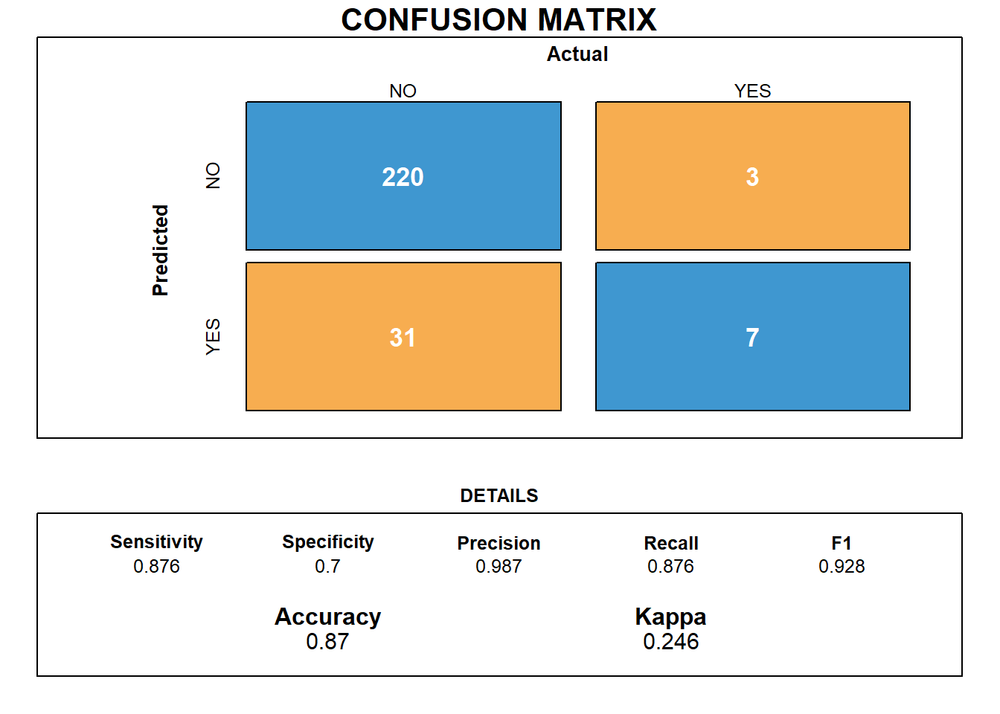
SVM Model Overfitting model.
svm_talent_factor_model_train <- train(Attrition ~., talent_factor_model_Train, method = 'svmRadial', trControl = trainControl(method='repeatedcv'), importance=T)
predTrainsvm <- predict(svm_talent_factor_model_train, talent_factor_model_Test)
confusionMatrix(table(talent_factor_model_Test$Attrition, predTrainsvm))## Confusion Matrix and Statistics
##
## predTrainsvm
## No Yes
## No 223 0
## Yes 34 4
##
## Accuracy : 0.8697
## 95% CI : (0.8227, 0.9081)
## No Information Rate : 0.9847
## P-Value [Acc > NIR] : 1
##
## Kappa : 0.1674
##
## Mcnemar's Test P-Value : 0.00000001519
##
## Sensitivity : 0.8677
## Specificity : 1.0000
## Pos Pred Value : 1.0000
## Neg Pred Value : 0.1053
## Prevalence : 0.9847
## Detection Rate : 0.8544
## Detection Prevalence : 0.8544
## Balanced Accuracy : 0.9339
##
## 'Positive' Class : No
## cMatrixsvm <- table(predTrainsvm, talent_factor_model_Test$Attrition)
plot(cMatrixsvm, col="blue", ylab="Actual", xlab="Predicted", main='Support Vector Machine Confusion Matrix')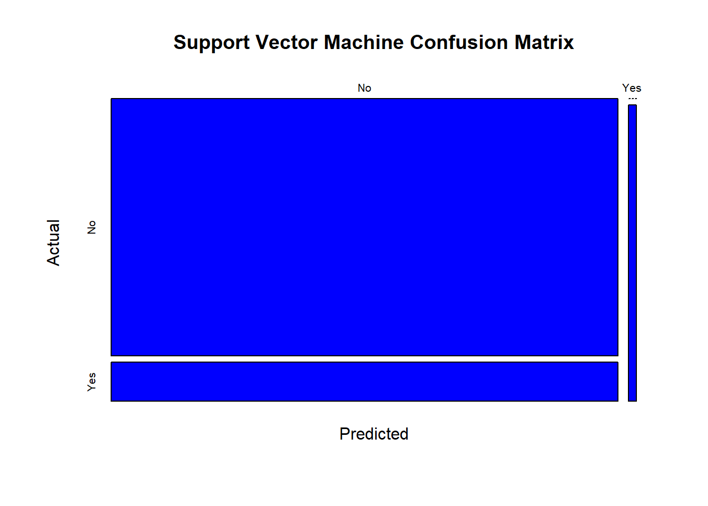
draw_confusion_matrix <- function(cm,Class1,Class2) {
layout(matrix(c(1,1,2)))
par(mar=c(2,2,2,2))
plot(c(100, 345), c(300, 450), type = "n", xlab="", ylab="", xaxt='n', yaxt='n')
title('CONFUSION MATRIX', cex.main=2)
# create the matrix
rect(150, 430, 240, 370, col='#3F97D0')
text(195, 435, Class1, cex=1.2)
rect(250, 430, 340, 370, col='#F7AD50')
text(295, 435, Class2, cex=1.2)
text(125, 370, 'Predicted', cex=1.3, srt=90, font=2)
text(245, 450, 'Actual', cex=1.3, font=2)
rect(150, 305, 240, 365, col='#F7AD50')
rect(250, 305, 340, 365, col='#3F97D0')
text(140, 400, Class1, cex=1.2, srt=90)
text(140, 335, Class2, cex=1.2, srt=90)
# add in the cm results
res <- as.numeric(cm$table)
text(195, 400, res[1], cex=1.6, font=2, col='white')
text(195, 335, res[2], cex=1.6, font=2, col='white')
text(295, 400, res[3], cex=1.6, font=2, col='white')
text(295, 335, res[4], cex=1.6, font=2, col='white')
# add in the specifics
plot(c(100, 0), c(100, 0), type = "n", xlab="", ylab="", main = "DETAILS", xaxt='n', yaxt='n')
text(10, 85, names(cm$byClass[1]), cex=1.2, font=2)
text(10, 70, round(as.numeric(cm$byClass[1]), 3), cex=1.2)
text(30, 85, names(cm$byClass[2]), cex=1.2, font=2)
text(30, 70, round(as.numeric(cm$byClass[2]), 3), cex=1.2)
text(50, 85, names(cm$byClass[5]), cex=1.2, font=2)
text(50, 70, round(as.numeric(cm$byClass[5]), 3), cex=1.2)
text(70, 85, names(cm$byClass[6]), cex=1.2, font=2)
text(70, 70, round(as.numeric(cm$byClass[6]), 3), cex=1.2)
text(90, 85, names(cm$byClass[7]), cex=1.2, font=2)
text(90, 70, round(as.numeric(cm$byClass[7]), 3), cex=1.2)
# add in the accuracy information
text(30, 35, names(cm$overall[1]), cex=1.5, font=2)
text(30, 20, round(as.numeric(cm$overall[1]), 3), cex=1.4)
text(70, 35, names(cm$overall[2]), cex=1.5, font=2)
text(70, 20, round(as.numeric(cm$overall[2]), 3), cex=1.4)
}
draw_confusion_matrix(confusionMatrix(table(talent_factor_model_Test$Attrition, predTrainsvm)),"NO","YES")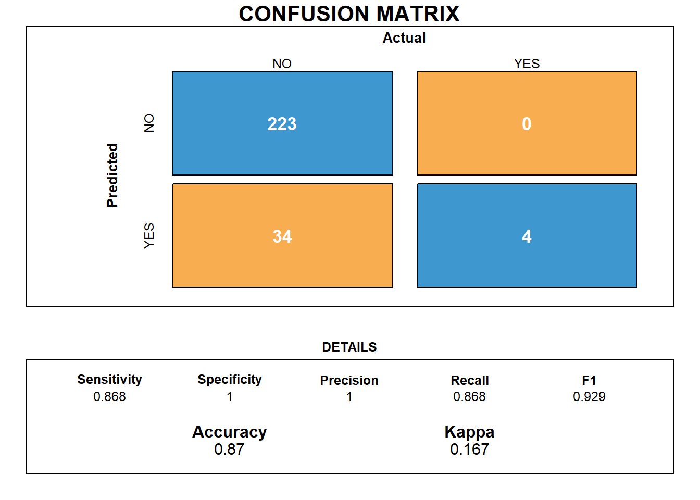
Feature Engineering for importance variable related to attrition. Show top 3 factors of influence.
### Feature Importance for Predictive ability
# ensure results are repeatable
# load the library
# define the control using a random forest selection function
control <- rfeControl(functions=rfFuncs, method="cv", number=10)
# train the model
results <- rfe(talent_factor[,2:33], talent_factor[,1], sizes=c(2:33), rfeControl=control)
# summarize the results
print(results)##
## Recursive feature selection
##
## Outer resampling method: Cross-Validated (10 fold)
##
## Resampling performance over subset size:
##
## Variables Accuracy Kappa AccuracySD KappaSD Selected
## 2 0.8494 0.1729 0.01833 0.18331
## 3 0.8494 0.1674 0.01376 0.14133
## 4 0.8494 0.2798 0.01987 0.12301
## 5 0.8506 0.2841 0.02234 0.13555
## 6 0.8448 0.2569 0.02315 0.12416
## 7 0.8391 0.2352 0.02483 0.12111
## 8 0.8437 0.2559 0.01643 0.08017
## 9 0.8471 0.2800 0.01718 0.07936
## 10 0.8460 0.2512 0.01893 0.12433
## 11 0.8483 0.2568 0.02154 0.12959
## 12 0.8563 0.2995 0.01648 0.10931
## 13 0.8575 0.2982 0.01454 0.09822
## 14 0.8586 0.2914 0.01718 0.10311
## 15 0.8517 0.2572 0.01912 0.10761
## 16 0.8540 0.2605 0.01333 0.10640
## 17 0.8529 0.2423 0.01781 0.10118
## 18 0.8575 0.2584 0.01731 0.11373
## 19 0.8586 0.2679 0.01801 0.11619
## 20 0.8621 0.2697 0.02099 0.13822
## 21 0.8621 0.2708 0.01877 0.12442
## 22 0.8586 0.2453 0.02171 0.12669
## 23 0.8598 0.2460 0.02013 0.13272
## 24 0.8644 0.2714 0.02154 0.13814 *
## 25 0.8609 0.2503 0.01833 0.12205
## 26 0.8632 0.2633 0.01987 0.12627
## 27 0.8609 0.2442 0.01912 0.12415
## 28 0.8563 0.2272 0.01648 0.10297
## 29 0.8586 0.2462 0.01439 0.08889
## 30 0.8575 0.2250 0.01349 0.08089
## 31 0.8586 0.2333 0.01718 0.10816
## 32 0.8540 0.2035 0.01718 0.09603
##
## The top 5 variables (out of 24):
## OverTime, StockOptionLevel, MonthlyIncome, JobRole, Age# list the chosen features
predictors(results)## [1] "OverTime" "StockOptionLevel" "MonthlyIncome" "JobRole" "Age" "JobLevel"
## [7] "JobInvolvement" "TotalWorkingYears" "MaritalStatus" "YearsAtCompany" "WorkLifeBalance" "YearsWithCurrManager"
## [13] "YearsInCurrentRole" "EducationField" "Department" "YearsSinceLastPromotion" "JobSatisfaction" "NumCompaniesWorked"
## [19] "EnvironmentSatisfaction" "BusinessTravel" "ID" "DistanceFromHome" "DailyRate" "Education"# plot the results
plot(results, type=c("g", "o"))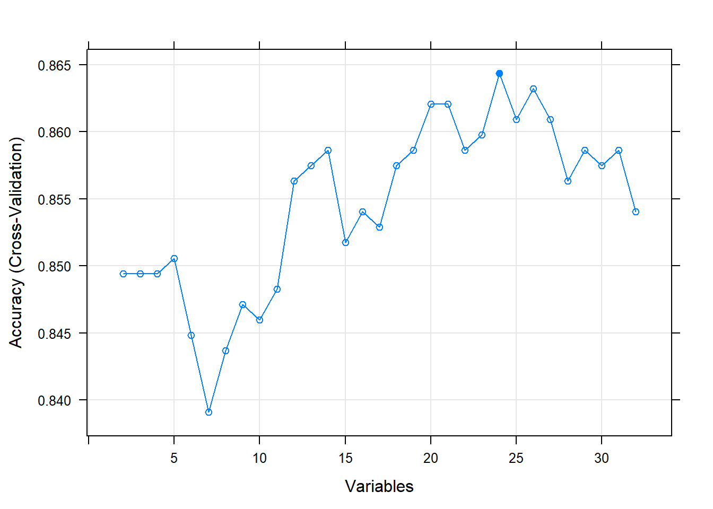
#Boruta Feature Engineering
boruta.talent_train <- Boruta(Attrition~., data = talent_factor, doTrace = 2)## 1. run of importance source...## 2. run of importance source...## 3. run of importance source...## 4. run of importance source...## 5. run of importance source...## 6. run of importance source...## 7. run of importance source...## 8. run of importance source...## 9. run of importance source...## 10. run of importance source...## 11. run of importance source...## 12. run of importance source...## After 12 iterations, +1.4 secs:## confirmed 8 attributes: Age, JobInvolvement, MaritalStatus, MonthlyIncome, OverTime and 3 more;## rejected 14 attributes: BusinessTravel, DailyRate, DistanceGrouping, Education, EducationField and 9 more;## still have 12 attributes left.## 13. run of importance source...## 14. run of importance source...## 15. run of importance source...## 16. run of importance source...## After 16 iterations, +1.8 secs:## confirmed 4 attributes: agegroup, JobLevel, JobRole, YearsWithCurrManager;## still have 8 attributes left.## 17. run of importance source...## 18. run of importance source...## 19. run of importance source...## 20. run of importance source...## After 20 iterations, +2.1 secs:## rejected 1 attribute: DistanceFromHome;## still have 7 attributes left.## 21. run of importance source...## 22. run of importance source...## 23. run of importance source...## 24. run of importance source...## 25. run of importance source...## 26. run of importance source...## 27. run of importance source...## 28. run of importance source...## 29. run of importance source...## 30. run of importance source...## 31. run of importance source...## 32. run of importance source...## 33. run of importance source...## 34. run of importance source...## 35. run of importance source...## 36. run of importance source...## 37. run of importance source...## 38. run of importance source...## 39. run of importance source...## 40. run of importance source...## 41. run of importance source...## 42. run of importance source...## 43. run of importance source...## 44. run of importance source...## After 44 iterations, +4 secs:## confirmed 1 attribute: WorkLifeBalance;## still have 6 attributes left.## 45. run of importance source...## 46. run of importance source...## 47. run of importance source...## 48. run of importance source...## 49. run of importance source...## 50. run of importance source...## 51. run of importance source...## 52. run of importance source...## 53. run of importance source...## 54. run of importance source...## 55. run of importance source...## 56. run of importance source...## 57. run of importance source...## 58. run of importance source...## 59. run of importance source...## After 59 iterations, +5.2 secs:## confirmed 1 attribute: YearsInCurrentRole;## still have 5 attributes left.## 60. run of importance source...## 61. run of importance source...## 62. run of importance source...## After 62 iterations, +5.4 secs:## confirmed 1 attribute: NumCompaniesWorked;## still have 4 attributes left.## 63. run of importance source...## 64. run of importance source...## 65. run of importance source...## 66. run of importance source...## 67. run of importance source...## 68. run of importance source...## 69. run of importance source...## 70. run of importance source...## 71. run of importance source...## 72. run of importance source...## 73. run of importance source...## 74. run of importance source...## 75. run of importance source...## 76. run of importance source...## 77. run of importance source...## 78. run of importance source...## 79. run of importance source...## 80. run of importance source...## 81. run of importance source...## 82. run of importance source...## 83. run of importance source...## 84. run of importance source...## 85. run of importance source...## After 85 iterations, +7.3 secs:## rejected 1 attribute: EnvironmentSatisfaction;## still have 3 attributes left.## 86. run of importance source...## 87. run of importance source...## 88. run of importance source...## 89. run of importance source...## 90. run of importance source...## 91. run of importance source...## 92. run of importance source...## 93. run of importance source...## 94. run of importance source...## 95. run of importance source...## 96. run of importance source...## 97. run of importance source...## 98. run of importance source...## 99. run of importance source...print(boruta.talent_train)## Boruta performed 99 iterations in 8.395969 secs.
## 15 attributes confirmed important: Age, agegroup, JobInvolvement, JobLevel, JobRole and 10 more;
## 16 attributes confirmed unimportant: BusinessTravel, DailyRate, DistanceFromHome, DistanceGrouping, Education and 11 more;
## 3 tentative attributes left: Department, JobSatisfaction, YearsSinceLastPromotion;#take a call on tentative features
boruta.talent <- TentativeRoughFix(boruta.talent_train)
print(boruta.talent)## Boruta performed 99 iterations in 8.395969 secs.
## Tentatives roughfixed over the last 99 iterations.
## 17 attributes confirmed important: Age, agegroup, Department, JobInvolvement, JobLevel and 12 more;
## 17 attributes confirmed unimportant: BusinessTravel, DailyRate, DistanceFromHome, DistanceGrouping, Education and 12 more;getSelectedAttributes(boruta.talent_train, withTentative = F)## [1] "Age" "JobInvolvement" "JobLevel" "JobRole" "MaritalStatus" "MonthlyIncome" "NumCompaniesWorked"
## [8] "OverTime" "StockOptionLevel" "TotalWorkingYears" "WorkLifeBalance" "YearsAtCompany" "YearsInCurrentRole" "YearsWithCurrManager"
## [15] "agegroup"plot(boruta.talent, xlab = "", xaxt = "n")
lz<-lapply(1:ncol(boruta.talent$ImpHistory),function(i)
boruta.talent$ImpHistory[is.finite(boruta.talent$ImpHistory[,i]),i])
names(lz) <- colnames(boruta.talent$ImpHistory)
Labels <- sort(sapply(lz,median))
axis(side = 1,las=2,labels = names(Labels),
at = 1:ncol(boruta.talent$ImpHistory), cex.axis = 0.7)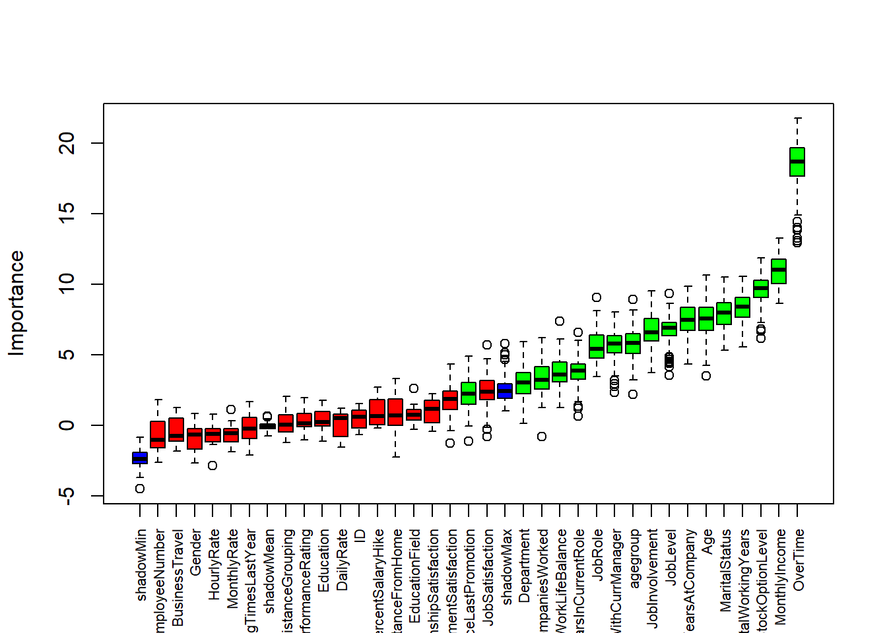
Salary Prediction Remove variables with high VIF.
salaryfitincome <- lm(MonthlyIncome ~ ., data = talent_factor_model_Train)
summary(salaryfitincome)##
## Call:
## lm(formula = MonthlyIncome ~ ., data = talent_factor_model_Train)
##
## Residuals:
## Min 1Q Median 3Q Max
## -4275.5 -1146.9 -194.5 850.6 6979.8
##
## Coefficients:
## Estimate Std. Error t value Pr(>|t|)
## (Intercept) 6064.97435 1871.91494 3.240 0.001267 **
## AttritionYes 98.75463 242.31998 0.408 0.683769
## ID -0.13152 0.31388 -0.419 0.675368
## Age 23.97666 31.36031 0.765 0.444860
## BusinessTravelTravel_Frequently 424.51501 297.39100 1.427 0.154006
## BusinessTravelTravel_Rarely 669.06384 248.99319 2.687 0.007423 **
## DailyRate 0.15050 0.20016 0.752 0.452426
## DepartmentResearch & Development -1351.79303 1019.64164 -1.326 0.185464
## DepartmentSales -2283.88509 1061.75725 -2.151 0.031902 *
## DistanceFromHome 99.55346 48.47935 2.054 0.040487 *
## Education -62.03626 78.35166 -0.792 0.428833
## EducationFieldLife Sciences 252.11961 797.66856 0.316 0.752067
## EducationFieldMarketing 362.03619 848.31581 0.427 0.669711
## EducationFieldMedical 143.18277 796.88881 0.180 0.857471
## EducationFieldOther 517.06650 852.65570 0.606 0.544483
## EducationFieldTechnical Degree 211.41705 830.03699 0.255 0.799042
## EmployeeNumber 0.18662 0.12699 1.470 0.142258
## EnvironmentSatisfaction 13.72407 69.92842 0.196 0.844479
## GenderMale 105.31498 157.05759 0.671 0.502785
## HourlyRate -5.51836 3.75374 -1.470 0.142099
## JobInvolvement -166.02619 110.93706 -1.497 0.135068
## JobRoleHuman Resources -4470.08168 1087.36994 -4.111 0.0000453 ***
## JobRoleLaboratory Technician -3629.18482 325.26919 -11.157 < 0.0000000000000002 ***
## JobRoleManager 9914.16458 566.53778 17.500 < 0.0000000000000002 ***
## JobRoleManufacturing Director 314.50634 359.85505 0.874 0.382505
## JobRoleResearch Director 8647.43137 418.98707 20.639 < 0.0000000000000002 ***
## JobRoleResearch Scientist -3516.07269 315.98359 -11.127 < 0.0000000000000002 ***
## JobRoleSales Executive 728.26559 786.01082 0.927 0.354569
## JobRoleSales Representative -3066.12097 846.57432 -3.622 0.000319 ***
## JobSatisfaction 60.52525 69.85605 0.866 0.386628
## MaritalStatusMarried -87.72685 210.21874 -0.417 0.676611
## MaritalStatusSingle 204.09726 289.13422 0.706 0.480550
## MonthlyRate -0.01673 0.01099 -1.522 0.128491
## NumCompaniesWorked 62.85755 33.70679 1.865 0.062729 .
## OverTimeYes 206.31053 185.03891 1.115 0.265349
## PerformanceRating -327.52353 207.20564 -1.581 0.114520
## RelationshipSatisfaction -37.89386 69.32929 -0.547 0.584887
## StockOptionLevel 24.41334 121.26852 0.201 0.840525
## TrainingTimesLastYear 51.31379 61.79512 0.830 0.406676
## WorkLifeBalance -75.96340 110.78730 -0.686 0.493207
## YearsInCurrentRole 89.23222 33.80982 2.639 0.008541 **
## YearsSinceLastPromotion 112.54822 30.87254 3.646 0.000292 ***
## YearsWithCurrManager 14.87531 33.63510 0.442 0.658476
## agegroup25-34 -99.40574 412.45104 -0.241 0.809634
## agegroup35-44 234.13200 583.09778 0.402 0.688183
## agegroup45 - 52 250.06540 846.51699 0.295 0.767794
## agegroupOver53 447.40828 1104.37685 0.405 0.685542
## DistanceGrouping19 - 25 Miles -547.93184 498.93699 -1.098 0.272591
## DistanceGrouping25+ Miles -1465.27911 733.87124 -1.997 0.046349 *
## DistanceGrouping6 - 10 Miles 693.32905 398.31074 1.741 0.082292 .
## DistanceGroupingLess than 6 Miles 1077.74395 637.17989 1.691 0.091313 .
## ---
## Signif. codes: 0 '***' 0.001 '**' 0.01 '*' 0.05 '.' 0.1 ' ' 1
##
## Residual standard error: 1839 on 558 degrees of freedom
## Multiple R-squared: 0.8546, Adjusted R-squared: 0.8415
## F-statistic: 65.58 on 50 and 558 DF, p-value: < 0.00000000000000022vif(salaryfitincome)## AttritionYes ID Age BusinessTravelTravel_Frequently
## 1.474873 1.087896 13.806559 2.307338
## BusinessTravelTravel_Rarely DailyRate DepartmentResearch & Development DepartmentSales
## 2.279195 1.098149 42.311201 42.949300
## DistanceFromHome Education EducationFieldLife Sciences EducationFieldMarketing
## 27.965469 1.188483 28.069374 12.858471
## EducationFieldMedical EducationFieldOther EducationFieldTechnical Degree EmployeeNumber
## 24.193633 6.903387 9.692180 1.079079
## EnvironmentSatisfaction GenderMale HourlyRate JobInvolvement
## 1.099774 1.071251 1.072541 1.106691
## JobRoleHuman Resources JobRoleLaboratory Technician JobRoleManager JobRoleManufacturing Director
## 6.765003 2.820637 2.878403 2.071795
## JobRoleResearch Director JobRoleResearch Scientist JobRoleSales Executive JobRoleSales Representative
## 1.804542 2.951310 19.702710 6.616596
## JobSatisfaction MaritalStatusMarried MaritalStatusSingle MonthlyRate
## 1.107401 1.983575 3.204211 1.096191
## NumCompaniesWorked OverTimeYes PerformanceRating RelationshipSatisfaction
## 1.277847 1.204250 1.052874 1.066586
## StockOptionLevel TrainingTimesLastYear WorkLifeBalance YearsInCurrentRole
## 1.952037 1.101836 1.089803 2.746010
## YearsSinceLastPromotion YearsWithCurrManager agegroup25-34 agegroup35-44
## 1.678901 2.522614 6.758746 14.490986
## agegroup45 - 52 agegroupOver53 DistanceGrouping19 - 25 Miles DistanceGrouping25+ Miles
## 16.107671 14.726643 4.448009 5.395912
## DistanceGrouping6 - 10 Miles DistanceGroupingLess than 6 Miles
## 5.666617 17.875573talent_factor_model_salary <- talent_factor %>% dplyr::select(everything(), -Age, -DistanceFromHome, -Department )
trainInd <- sample(1:dim(talent_factor_model_salary)[1],round(splitPerc * dim(talent_factor_model_salary)[1]))
talent_factor_model_salary_Train = talent_factor_model_salary[trainInd,]
talent_factor_model_salary_Test = talent_factor_model_salary[-trainInd,]
##Interaction rates of all the variables to see collinearity
## Variables where we are seeing high collinearity within categorical variables, we will leave in.
##Significant p-value of <0.0001.
#Variables with High collinearity
# Age/Age Group
# Distance Grouping
# DepartmentSalary Prediction - LinearRegression
#Job role coefficients are going to be the biggest predictors of monthly income. followed by business travel and performance rating.
salary_predict_lm <- lm(MonthlyIncome ~., data= talent_factor_model_salary_Train)
summary(salary_predict_lm)##
## Call:
## lm(formula = MonthlyIncome ~ ., data = talent_factor_model_salary_Train)
##
## Residuals:
## Min 1Q Median 3Q Max
## -3624.7 -706.7 24.4 616.2 4065.7
##
## Coefficients:
## Estimate Std. Error t value Pr(>|t|)
## (Intercept) -701.659213 860.659331 -0.815 0.415273
## AttritionYes 202.206680 147.756101 1.369 0.171701
## ID -0.125753 0.179817 -0.699 0.484632
## BusinessTravelTravel_Frequently 290.681729 176.162322 1.650 0.099490 .
## BusinessTravelTravel_Rarely 428.905532 146.069027 2.936 0.003458 **
## DailyRate 0.163206 0.113211 1.442 0.149975
## Education -53.089529 46.797077 -1.134 0.257088
## EducationFieldLife Sciences 379.729574 452.935169 0.838 0.402179
## EducationFieldMarketing 124.771897 475.428770 0.262 0.793078
## EducationFieldMedical 250.003741 455.333691 0.549 0.583187
## EducationFieldOther 267.106958 487.604977 0.548 0.584053
## EducationFieldTechnical Degree 370.964968 472.133369 0.786 0.432365
## EmployeeNumber 0.084016 0.076026 1.105 0.269595
## EnvironmentSatisfaction -5.537574 42.036005 -0.132 0.895242
## GenderMale 103.958913 93.166663 1.116 0.264972
## HourlyRate -1.819169 2.255175 -0.807 0.420204
## JobInvolvement 36.486305 65.692391 0.555 0.578836
## JobLevel 2750.374937 106.503468 25.824 < 0.0000000000000002 ***
## JobRoleHuman Resources -113.436058 395.260256 -0.287 0.774226
## JobRoleLaboratory Technician -719.340161 216.384550 -3.324 0.000944 ***
## JobRoleManager 4303.984979 299.315071 14.379 < 0.0000000000000002 ***
## JobRoleManufacturing Director 105.911204 213.699844 0.496 0.620367
## JobRoleResearch Director 4120.783562 289.021785 14.258 < 0.0000000000000002 ***
## JobRoleResearch Scientist -379.847189 218.913279 -1.735 0.083267 .
## JobRoleSales Executive 63.315470 193.422833 0.327 0.743532
## JobRoleSales Representative -348.882729 278.312989 -1.254 0.210526
## JobSatisfaction 19.342889 42.311534 0.457 0.647738
## MaritalStatusMarried 55.370021 123.069352 0.450 0.652951
## MaritalStatusSingle 11.327366 167.444557 0.068 0.946090
## MonthlyRate -0.005317 0.006441 -0.825 0.409465
## NumCompaniesWorked 12.180801 21.565967 0.565 0.572426
## OverTimeYes -83.186694 106.408737 -0.782 0.434684
## PercentSalaryHike 11.385461 20.276738 0.562 0.574680
## PerformanceRating -139.734411 205.567634 -0.680 0.496945
## RelationshipSatisfaction 33.349408 40.772253 0.818 0.413738
## StockOptionLevel 61.457700 70.376520 0.873 0.382892
## TotalWorkingYears 49.928809 13.674456 3.651 0.000286 ***
## TrainingTimesLastYear 16.973690 36.166063 0.469 0.639020
## WorkLifeBalance -32.986055 64.517983 -0.511 0.609365
## YearsAtCompany -10.962709 16.762111 -0.654 0.513370
## YearsInCurrentRole 6.822686 20.837470 0.327 0.743470
## YearsSinceLastPromotion 38.072771 19.187937 1.984 0.047723 *
## YearsWithCurrManager -28.593279 20.311903 -1.408 0.159774
## agegroup25-34 106.052130 208.900373 0.508 0.611886
## agegroup35-44 225.536895 216.975039 1.039 0.299041
## agegroup45 - 52 139.178776 250.107145 0.556 0.578108
## agegroupOver53 278.524826 303.997982 0.916 0.359955
## DistanceGrouping19 - 25 Miles -258.847045 178.733277 -1.448 0.148114
## DistanceGrouping25+ Miles -279.006846 236.837358 -1.178 0.239278
## DistanceGrouping6 - 10 Miles 35.272247 155.145424 0.227 0.820235
## DistanceGroupingLess than 6 Miles -20.922738 146.651814 -0.143 0.886603
## ---
## Signif. codes: 0 '***' 0.001 '**' 0.01 '*' 0.05 '.' 0.1 ' ' 1
##
## Residual standard error: 1085 on 558 degrees of freedom
## Multiple R-squared: 0.9467, Adjusted R-squared: 0.942
## F-statistic: 198.4 on 50 and 558 DF, p-value: < 0.00000000000000022vif(salary_predict_lm)## AttritionYes ID BusinessTravelTravel_Frequently BusinessTravelTravel_Rarely
## 1.536683 1.084526 2.374692 2.289422
## DailyRate Education EducationFieldLife Sciences EducationFieldMarketing
## 1.091138 1.192046 25.951288 12.475112
## EducationFieldMedical EducationFieldOther EducationFieldTechnical Degree EmployeeNumber
## 21.952066 6.837250 9.313313 1.099500
## EnvironmentSatisfaction GenderMale HourlyRate JobInvolvement
## 1.113589 1.074708 1.079177 1.128328
## JobLevel JobRoleHuman Resources JobRoleLaboratory Technician JobRoleManager
## 6.622441 2.191921 3.531848 2.576335
## JobRoleManufacturing Director JobRoleResearch Director JobRoleResearch Scientist JobRoleSales Executive
## 2.189927 1.958733 3.845769 3.606998
## JobRoleSales Representative JobSatisfaction MaritalStatusMarried MaritalStatusSingle
## 2.343013 1.134949 1.952025 3.056588
## MonthlyRate NumCompaniesWorked OverTimeYes PercentSalaryHike
## 1.073896 1.498089 1.178029 2.915948
## PerformanceRating RelationshipSatisfaction StockOptionLevel TotalWorkingYears
## 2.876632 1.069947 1.875215 5.612303
## TrainingTimesLastYear WorkLifeBalance YearsAtCompany YearsInCurrentRole
## 1.119633 1.077238 5.671875 3.091834
## YearsSinceLastPromotion YearsWithCurrManager agegroup25-34 agegroup35-44
## 1.943399 2.726974 4.924619 5.812262
## agegroup45 - 52 agegroupOver53 DistanceGrouping19 - 25 Miles DistanceGrouping25+ Miles
## 4.147808 3.068046 1.963982 1.443824
## DistanceGrouping6 - 10 Miles DistanceGroupingLess than 6 Miles
## 2.420304 2.697315Salary Prediction - KNN RMSE of $1950. K=5.
#Our Lowest RMSE came with a K nearest neighbors of 7.
#This prediction model gives us an RMSE of $2,067 on monthly income, which falls below our $3,000 evaluation criteria.
traind <- trainControl(method = 'repeatedcv', number = 10, repeats = 3)
knn_fit <- train(MonthlyIncome ~ ., data = talent_factor_model_salary_Train, method = 'knn', trControl = traind, preProcess = c('center', 'scale'), tuneLength = 10)
knn_fit## k-Nearest Neighbors
##
## 609 samples
## 31 predictor
##
## Pre-processing: centered (50), scaled (50)
## Resampling: Cross-Validated (10 fold, repeated 3 times)
## Summary of sample sizes: 548, 548, 548, 548, 548, 547, ...
## Resampling results across tuning parameters:
##
## k RMSE Rsquared MAE
## 5 2026.007 0.7976561 1496.970
## 7 2031.210 0.8044199 1498.573
## 9 2040.262 0.8114927 1512.838
## 11 2077.917 0.8124091 1537.392
## 13 2106.273 0.8147251 1558.960
## 15 2139.589 0.8163468 1587.439
## 17 2172.004 0.8190986 1617.564
## 19 2209.943 0.8219897 1641.561
## 21 2252.620 0.8220670 1671.827
## 23 2281.932 0.8240207 1690.474
##
## RMSE was used to select the optimal model using the smallest value.
## The final value used for the model was k = 5.plot(knn_fit)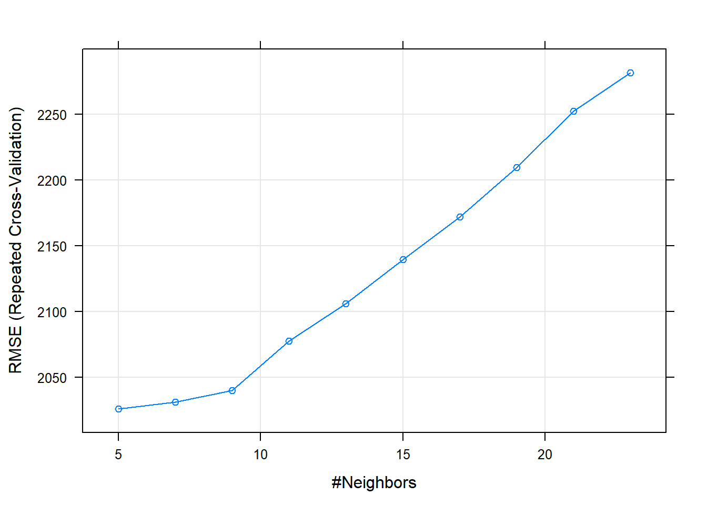
predregtrainknn <- predict(knn_fit, talent_factor_model_salary_Test)Salary Prediction - Random Forest $1050 for RMSE. 22 predictors.
# Our optimal value for RMSE is $1037. However, we may be oveerfitting.
rf_fit <- train(MonthlyIncome ~ ., data = talent_factor_model_salary_Train, method = 'rf', trControl = traind, preProcess = c('center', 'scale'), tuneLength = 10, importance=T)
rf_fit## Random Forest
##
## 609 samples
## 31 predictor
##
## Pre-processing: centered (50), scaled (50)
## Resampling: Cross-Validated (10 fold, repeated 3 times)
## Summary of sample sizes: 548, 547, 548, 548, 549, 549, ...
## Resampling results across tuning parameters:
##
## mtry RMSE Rsquared MAE
## 2 2203.619 0.8734536 1705.7356
## 7 1306.870 0.9271277 989.6898
## 12 1128.539 0.9396974 853.0358
## 18 1052.677 0.9454576 788.1337
## 23 1033.170 0.9468346 768.9916
## 28 1021.278 0.9477365 763.6225
## 34 1025.240 0.9471834 766.5239
## 39 1027.331 0.9468540 768.8841
## 44 1033.188 0.9462615 771.4034
## 50 1037.834 0.9458139 771.1123
##
## RMSE was used to select the optimal model using the smallest value.
## The final value used for the model was mtry = 28.plot(rf_fit)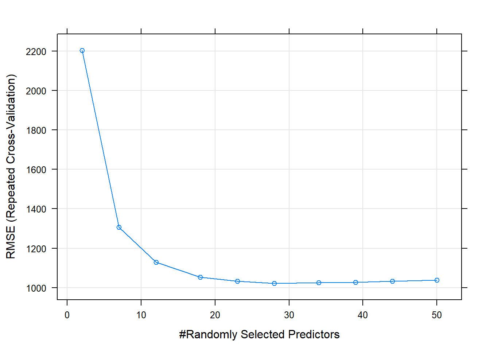
predregtrainrf <- predict(rf_fit, talent_factor_model_salary_Test)Salary Prediction - SVM $1300 for RMSE
### SVM METHOD RMSE IS 1366 and Rsquared is .91
svm_fit <- train(MonthlyIncome ~ ., data = talent_factor_model_salary_Train, method = 'svmRadial', trControl = traind, preProcess = c('center', 'scale'), tuneLength = 10, importance=T)
svm_fit## Support Vector Machines with Radial Basis Function Kernel
##
## 609 samples
## 31 predictor
##
## Pre-processing: centered (50), scaled (50)
## Resampling: Cross-Validated (10 fold, repeated 3 times)
## Summary of sample sizes: 548, 548, 548, 549, 547, 548, ...
## Resampling results across tuning parameters:
##
## C RMSE Rsquared MAE
## 0.25 1620.019 0.8984885 1224.983
## 0.50 1397.152 0.9117547 1089.541
## 1.00 1332.930 0.9149486 1045.716
## 2.00 1329.860 0.9144019 1052.799
## 4.00 1345.988 0.9119222 1074.775
## 8.00 1355.154 0.9106512 1081.664
## 16.00 1357.696 0.9102856 1083.667
## 32.00 1357.696 0.9102856 1083.667
## 64.00 1357.696 0.9102856 1083.667
## 128.00 1357.696 0.9102856 1083.667
##
## Tuning parameter 'sigma' was held constant at a value of 0.0111475
## RMSE was used to select the optimal model using the smallest value.
## The final values used for the model were sigma = 0.0111475 and C = 2.plot(svm_fit)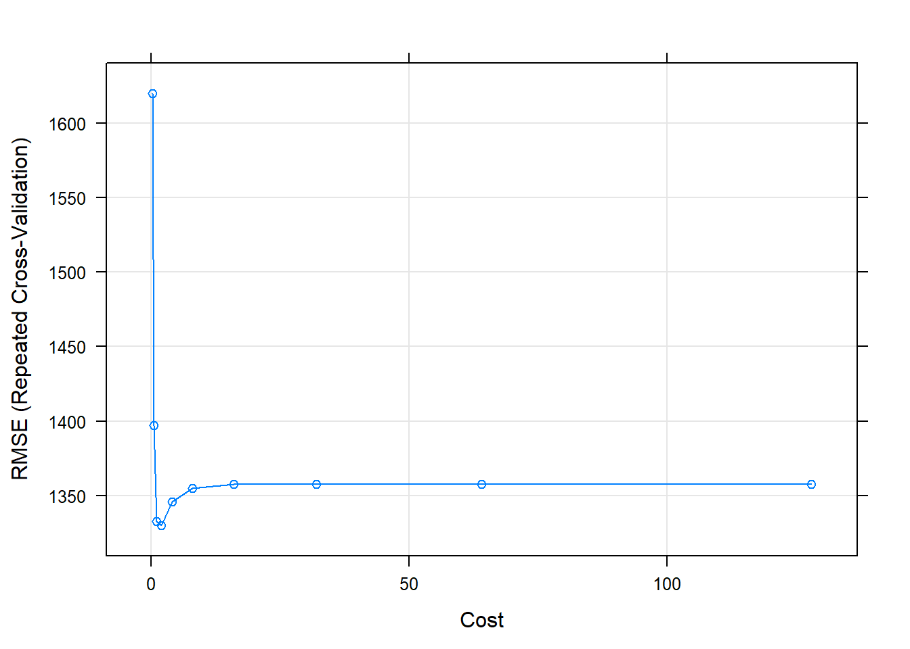
predregtrainsvm <- predict(svm_fit, talent_factor_model_salary_Test)Feature Engineering for importance variable related to salary
### Variable importance of our regressor
rfimportreg <- varImp(rf_fit, scale = FALSE)
plot(rfimportreg)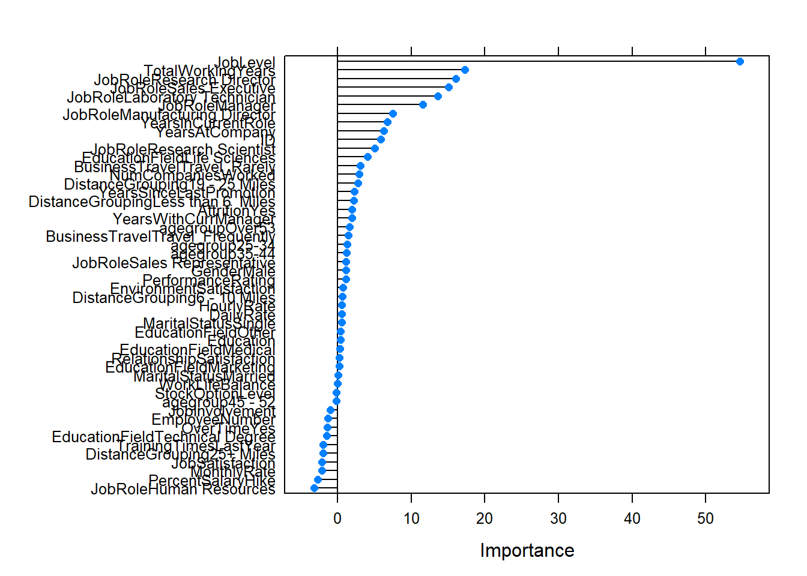
# Job Role, Age, and then Years with Current Manager are the top 3 important variables..
# Job title is typically a heavier predictor in salary and the older you are, the more senior you typically are, which affects your Salary.
#We also have Years with Current Manager closely followed by Years in Current Role, which would make sense as it can tie back to a users job performance and raises #once they have plenty of experience working the same job with the same boss.Run attrition classification on Test Data and output to csv
#Execute Classification model against test set and write out to csv
talent_attrition_predict<- predict(RF_talent_factor_model_train, talent_attrition_test)
talent_attrition_merge <- cbind(talent_attrition_test$ID, talent_attrition_predict)
talent_attrition_class <- as.data.frame(talent_attrition_merge)
talent_attrition_class$Attrition <- with(talent_attrition_class, ifelse(talent_attrition_predict == 1, "No", "Yes"))
talent_attrition_final <- talent_attrition_class[,!(names(talent_attrition_class) %in% c("talent_attrition_predict"))]
rename(talent_attrition_final, c("ID"="V1", "Attrition"="Attrition"))## ID Attrition
## 1 1171 No
## 2 1172 No
## 3 1173 No
## 4 1174 No
## 5 1175 No
## 6 1176 No
## 7 1177 No
## 8 1178 No
## 9 1179 No
## 10 1180 No
## 11 1181 No
## 12 1182 No
## 13 1183 No
## 14 1184 No
## 15 1185 No
## 16 1186 No
## 17 1187 No
## 18 1188 No
## 19 1189 No
## 20 1190 No
## 21 1191 No
## 22 1192 No
## 23 1193 No
## 24 1194 No
## 25 1195 No
## 26 1196 No
## 27 1197 No
## 28 1198 No
## 29 1199 No
## 30 1200 No
## 31 1201 No
## 32 1202 No
## 33 1203 No
## 34 1204 No
## 35 1205 Yes
## 36 1206 No
## 37 1207 No
## 38 1208 No
## 39 1209 No
## 40 1210 No
## 41 1211 No
## 42 1212 No
## 43 1213 No
## 44 1214 No
## 45 1215 No
## 46 1216 No
## 47 1217 No
## 48 1218 No
## 49 1219 No
## 50 1220 No
## 51 1221 No
## 52 1222 No
## 53 1223 No
## 54 1224 No
## 55 1225 No
## 56 1226 No
## 57 1227 No
## 58 1228 No
## 59 1229 No
## 60 1230 No
## 61 1231 No
## 62 1232 No
## 63 1233 Yes
## 64 1234 No
## 65 1235 No
## 66 1236 No
## 67 1237 No
## 68 1238 No
## 69 1239 No
## 70 1240 Yes
## 71 1241 No
## 72 1242 No
## 73 1243 No
## 74 1244 No
## 75 1245 No
## 76 1246 No
## 77 1247 No
## 78 1248 No
## 79 1249 No
## 80 1250 No
## 81 1251 No
## 82 1252 No
## 83 1253 No
## 84 1254 No
## 85 1255 No
## 86 1256 No
## 87 1257 No
## 88 1258 No
## 89 1259 No
## 90 1260 No
## 91 1261 No
## 92 1262 No
## 93 1263 No
## 94 1264 No
## 95 1265 No
## 96 1266 No
## 97 1267 No
## 98 1268 No
## 99 1269 No
## 100 1270 Yes
## 101 1271 No
## 102 1272 No
## 103 1273 No
## 104 1274 No
## 105 1275 No
## 106 1276 No
## 107 1277 No
## 108 1278 No
## 109 1279 Yes
## 110 1280 No
## 111 1281 No
## 112 1282 No
## 113 1283 No
## 114 1284 No
## 115 1285 No
## 116 1286 No
## 117 1287 No
## 118 1288 No
## 119 1289 No
## 120 1290 No
## 121 1291 No
## 122 1292 No
## 123 1293 No
## 124 1294 No
## 125 1295 No
## 126 1296 No
## 127 1297 No
## 128 1298 Yes
## 129 1299 No
## 130 1300 No
## 131 1301 No
## 132 1302 No
## 133 1303 No
## 134 1304 No
## 135 1305 No
## 136 1306 No
## 137 1307 No
## 138 1308 No
## 139 1309 Yes
## 140 1310 No
## 141 1311 No
## 142 1312 No
## 143 1313 No
## 144 1314 No
## 145 1315 No
## 146 1316 No
## 147 1317 No
## 148 1318 Yes
## 149 1319 No
## 150 1320 No
## 151 1321 No
## 152 1322 No
## 153 1323 No
## 154 1324 No
## 155 1325 Yes
## 156 1326 No
## 157 1327 No
## 158 1328 No
## 159 1329 Yes
## 160 1330 No
## 161 1331 No
## 162 1332 No
## 163 1333 No
## 164 1334 No
## 165 1335 No
## 166 1336 No
## 167 1337 No
## 168 1338 No
## 169 1339 No
## 170 1340 No
## 171 1341 No
## 172 1342 No
## 173 1343 No
## 174 1344 No
## 175 1345 No
## 176 1346 No
## 177 1347 No
## 178 1348 No
## 179 1349 No
## 180 1350 No
## 181 1351 Yes
## 182 1352 No
## 183 1353 No
## 184 1354 No
## 185 1355 No
## 186 1356 No
## 187 1357 No
## 188 1358 No
## 189 1359 No
## 190 1360 No
## 191 1361 No
## 192 1362 No
## 193 1363 No
## 194 1364 No
## 195 1365 No
## 196 1366 No
## 197 1367 No
## 198 1368 No
## 199 1369 No
## 200 1370 No
## 201 1371 No
## 202 1372 No
## 203 1373 No
## 204 1374 No
## 205 1375 No
## 206 1376 No
## 207 1377 No
## 208 1378 No
## 209 1379 No
## 210 1380 No
## 211 1381 No
## 212 1382 No
## 213 1383 No
## 214 1384 No
## 215 1385 No
## 216 1386 No
## 217 1387 No
## 218 1388 No
## 219 1389 No
## 220 1390 No
## 221 1391 No
## 222 1392 No
## 223 1393 No
## 224 1394 Yes
## 225 1395 No
## 226 1396 No
## 227 1397 No
## 228 1398 No
## 229 1399 No
## 230 1400 No
## 231 1401 Yes
## 232 1402 No
## 233 1403 No
## 234 1404 No
## 235 1405 No
## 236 1406 No
## 237 1407 No
## 238 1408 No
## 239 1409 No
## 240 1410 No
## 241 1411 No
## 242 1412 No
## 243 1413 No
## 244 1414 No
## 245 1415 No
## 246 1416 No
## 247 1417 No
## 248 1418 No
## 249 1419 No
## 250 1420 No
## 251 1421 Yes
## 252 1422 No
## 253 1423 No
## 254 1424 No
## 255 1425 No
## 256 1426 No
## 257 1427 No
## 258 1428 No
## 259 1429 No
## 260 1430 No
## 261 1431 No
## 262 1432 No
## 263 1433 No
## 264 1434 No
## 265 1435 No
## 266 1436 No
## 267 1437 No
## 268 1438 No
## 269 1439 No
## 270 1440 No
## 271 1441 No
## 272 1442 Yes
## 273 1443 No
## 274 1444 Yes
## 275 1445 Yes
## 276 1446 No
## 277 1447 No
## 278 1448 No
## 279 1449 No
## 280 1450 No
## 281 1451 No
## 282 1452 No
## 283 1453 No
## 284 1454 No
## 285 1455 No
## 286 1456 No
## 287 1457 No
## 288 1458 Yes
## 289 1459 No
## 290 1460 No
## 291 1461 No
## 292 1462 No
## 293 1463 No
## 294 1464 No
## 295 1465 No
## 296 1466 No
## 297 1467 No
## 298 1468 No
## 299 1469 No
## 300 1470 No#outputting data
write.csv(talent_attrition_final,"Case2Predictions_Herbaugh Attrition.csv",row.names = FALSE)Run salary prediction on Test Data
#run prediction on rf classification model using our test set
talent_salary_test$Attrition <- with(talent_salary_test, ifelse(Attrition == 1, "Yes", "No"))
talent_salary_regression <- predict(rf_fit, talent_salary_test)
talent_salary_merge <- cbind(talent_salary_test$ID, talent_salary_regression)
talent_salary_pred <- as.data.frame(talent_salary_merge)
names(talent_salary_pred)<- c("ID", "MonthlySalary")
#outputting data
write.csv(talent_salary_pred,"Case2Predictions_Herbaugh Salary.csv",row.names = FALSE)Youtube and Presentation link https://www.youtube.com/watch?v=pkeAmR0H_j8
Presentation https://github.com/jherbaugh/CaseStudy2DDS/blob/main/DDS%20Analytics%20Presentation.pptx
#Powerpoint Presentation
#Youtube Link
#https://www.youtube.com/watch?v=pkeAmR0H_j8Session Information
sessionInfo()## R version 4.0.4 (2021-02-15)
## Platform: x86_64-w64-mingw32/x64 (64-bit)
## Running under: Windows 10 x64 (build 18363)
##
## Matrix products: default
##
## locale:
## [1] LC_COLLATE=English_United States.1252 LC_CTYPE=English_United States.1252 LC_MONETARY=English_United States.1252 LC_NUMERIC=C
## [5] LC_TIME=English_United States.1252
##
## attached base packages:
## [1] parallel grid stats graphics grDevices utils datasets methods base
##
## other attached packages:
## [1] HH_3.1-43 gridExtra_2.3 multcomp_1.4-15 TH.data_1.0-10 survival_3.2-7 mvtnorm_1.1-1 latticeExtra_0.6-29 doParallel_1.0.16
## [9] iterators_1.0.13 foreach_1.5.1 randomForest_4.6-14 kernlab_0.9-29 mboost_2.9-4 stabs_0.6-4 naivebayes_0.9.7 MASS_7.3-53.1
## [17] Boruta_7.0.0 mlbench_2.1-3 ggcorrplot_0.1.3 table1_1.2.1 ggthemes_4.2.0 mapproj_1.2.7 maps_3.3.0 class_7.3-18
## [25] e1071_1.7-4 caret_6.0-86 lattice_0.20-41 ggpubr_0.4.0 plotly_4.9.2.1 VIM_6.0.0 colorspace_1.4-1 mice_3.12.0
## [33] usmap_0.5.1 GGally_2.0.0 visdat_0.5.3 forcats_0.5.0 stringr_1.4.0 purrr_0.3.4 readr_1.4.0 tidyr_1.1.2
## [41] tibble_3.0.4 ggplot2_3.3.2 tidyverse_1.3.0 dplyr_1.0.2
##
## loaded via a namespace (and not attached):
## [1] utf8_1.1.4 tidyselect_1.1.0 htmlwidgets_1.5.2 ranger_0.12.1 gmp_0.6-2 pROC_1.16.2 munsell_0.5.0
## [8] codetools_0.2-18 withr_2.3.0 knitr_1.30 rstudioapi_0.11 leaps_3.1 stats4_4.0.4 robustbase_0.93-6
## [15] ggsignif_0.6.0 vcd_1.4-8 labeling_0.4.2 farver_2.0.3 vctrs_0.3.4 generics_0.1.0 ipred_0.9-9
## [22] xfun_0.19 R6_2.5.0 reshape_0.8.8 assertthat_0.2.1 promises_1.1.1 scales_1.1.1 nnet_7.3-15
## [29] gtable_0.3.0 sandwich_3.0-0 timeDate_3043.102 rlang_0.4.8 splines_4.0.4 rstatix_0.7.0 lazyeval_0.2.2
## [36] ModelMetrics_1.2.2.2 broom_0.7.5 checkmate_2.0.0 yaml_2.2.1 reshape2_1.4.4 abind_1.4-5 modelr_0.1.8
## [43] backports_1.1.10 httpuv_1.5.4 Hmisc_4.4-2 inum_1.0-3 tools_4.0.4 lava_1.6.8.1 ellipsis_0.3.1
## [50] RColorBrewer_1.1-2 polynom_1.4-0 Rcpp_1.0.5 plyr_1.8.6 base64enc_0.1-3 progress_1.2.2 prettyunits_1.1.1
## [57] rpart_4.1-15 zoo_1.8-8 haven_2.3.1 cluster_2.1.0 fs_1.5.0 tinytex_0.27 magrittr_1.5
## [64] data.table_1.13.2 openxlsx_4.2.3 lmtest_0.9-38 reprex_0.3.0 hms_0.5.3 mime_0.9 evaluate_0.14
## [71] xtable_1.8-4 rio_0.5.16 jpeg_0.1-8.1 readxl_1.3.1 compiler_4.0.4 crayon_1.3.4 htmltools_0.5.0
## [78] mgcv_1.8-33 later_1.1.0.1 Formula_1.2-4 libcoin_1.0-6 lubridate_1.7.9 DBI_1.1.0 dbplyr_2.0.0
## [85] boot_1.3-26 Matrix_1.3-2 car_3.0-10 cli_2.1.0 quadprog_1.5-8 gower_0.2.2 pkgconfig_2.0.3
## [92] foreign_0.8-81 laeken_0.5.1 sp_1.4-4 recipes_0.1.15 xml2_1.3.2 prodlim_2019.11.13 rvest_0.3.6
## [99] digest_0.6.27 rmarkdown_2.5 cellranger_1.1.0 htmlTable_2.1.0 curl_4.3 shiny_1.5.0 lifecycle_0.2.0
## [106] nlme_3.1-152 jsonlite_1.7.1 carData_3.0-4 viridisLite_0.3.0 fansi_0.4.1 pillar_1.4.6 ggsci_2.9
## [113] fastmap_1.0.1 httr_1.4.2 DEoptimR_1.0-8 glue_1.4.2 zip_2.1.1 png_0.1-7 stringi_1.5.3
## [120] nnls_1.4 partykit_1.2-12 Rmpfr_0.8-2